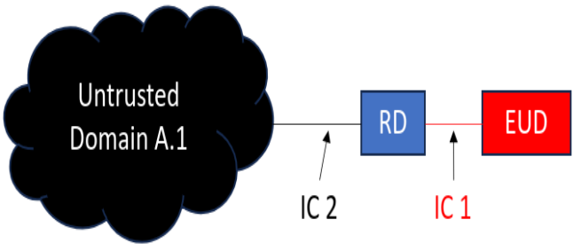
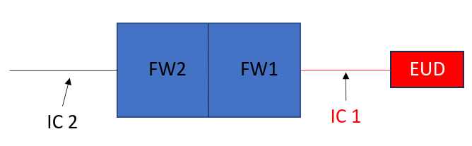

The scope of this Protection Profile (PP) is to
describe the security functionality of 3 different types of retransmission devices in terms of [CC]
and to define functional and assurance requirements for such devices.
They will be referred to as RD, ERD and HWS-ERD
(Retransmission Device, Encrypting Retransmission Device and Hardware Separated Encrypting Retransmission Device respectively).
These are small form factor devices to provide isolation, authentication and/or confidentiality for a EUD (End User Device) or
set of EUD’s that must interoperate with an Untrusted Domain. The main goal of the RD use case is to provide network transport
and simple isolation of the EUD. The ERD use case is intended to provide an independent layer of encryption on top of the
existing network transport. The encryption done by an RD as a stand alone device will authenticate the endpoint in addition
to adding confidentiality of the traffic. The HWS-ERD use case is intended to provide the most robust isolation between the
network transport and EUD on top of the encryption of the ERD. The functionality and requirements are intended to be inherited
as the use case moves from RD to HWS-ERD, as much as reasonable. If the RD requires X, then the ERD and HWS-ERD will require X
too unless unreasonable or inappropriate.
1.2 Terms
The following sections list Common Criteria and technology terms used in this document.
1.2.1 Common Criteria Terms
Assurance
Grounds for confidence that a TOE meets the SFRs [CC].
Base Protection Profile (Base-PP)
Protection Profile used as a basis to build a PP-Configuration.
Collaborative Protection Profile (cPP)
A Protection Profile developed by
international technical communities and approved by multiple schemes.
Common Criteria (CC)
Common Criteria for Information Technology Security Evaluation (International Standard ISO/IEC 15408).
Common Criteria Testing Laboratory
Within the context of the Common Criteria Evaluation and Validation Scheme (CCEVS), an IT security evaluation facility
accredited by the National Voluntary Laboratory Accreditation Program (NVLAP) and approved by the NIAP Validation Body to conduct Common Criteria-based evaluations.
Common Evaluation Methodology (CEM)
Common Evaluation Methodology for Information Technology Security Evaluation.
Distributed TOE
A TOE composed of multiple components operating as a logical whole.
Extended Package (EP)
A deprecated document form for collecting SFRs that implement a particular protocol, technology,
or functionality. See Functional Packages.
Functional Package (FP)
A document that collects SFRs for a particular protocol, technology,
or functionality.
Operational Environment (OE)
Hardware and software that are outside the TOE boundary that support the TOE functionality and security policy.
Protection Profile (PP)
An implementation-independent set of security requirements for a category of products.
The security functionality of the product under evaluation.
TOE Summary Specification (TSS)
A description of how a TOE satisfies the SFRs in an ST.
1.2.2 Technical Terms
Address Space Layout Randomization (ASLR)
An anti-exploitation feature which loads memory mappings into unpredictable
locations. ASLR makes it more difficult for an attacker to redirect control to code
that they have introduced into the address space of an application process.
Application (app)
Software that runs on a platform and performs tasks on behalf of
the user or owner of the platform, as well as its supporting documentation. The
terms TOE and application are interchangeable in this document.
Application Programming Interface (API)
A specification of routines, data structures, object classes, and variables
that allows an application to make use of services provided by another software
component, such as a library. APIs are often provided for a set of libraries included
with the platform.
Credential
Data that establishes the identity of a user, e.g. a cryptographic key or password.
Data Execution Prevention (DEP)
An anti-exploitation feature of modern operating systems executing on
modern computer hardware, which enforces a non-execute permission on pages of memory. DEP prevents pages of memory from containing both data and instructions, which makes
it more difficult for an attacker to introduce and execute code.
Developer
An entity that writes application software. For the purposes of this
document, vendors and developers are the same.
Encrypting Retransmission Device (ERD)
An RD with the additional capability to encrypt all traffic from the EUD through the
LAN interface to form an encrypted tunnel to another encryption end-point through the
ERD’s WAN interface.
An HWS-ERD will encrypt traffic between two endpoints while maintaining a defined physical
and logical protocol break between the trusted and the untrusted trusted domains. The
protocol break will be both physically and logically enforced.
Mobile Code
Software transmitted from a remote system for
execution within a limited execution environment on the local system. Typically, there is no persistent installation and
execution begins without the user's consent or even notification. Examples of mobile code technologies include JavaScript, Java applets, Adobe Flash,
and Microsoft Silverlight.
Operating System (OS)
Software that manages hardware resources and provides services for
applications.
Personally Identifiable Information (PII)
Any information about an individual maintained by an agency, including, but
not limited to, education, financial transactions, medical history, and criminal or
employment history and information which can be used to distinguish or trace an
individual's identity, such as their name, social security number, date and place of
birth, mother’s maiden name, biometric records, etc., including any other personal
information which is linked or linkable to an individual. [OMB]
Platform
The environment in which application software runs.
The platform can be an operating system, hardware environment, a software based execution environment,
or some combination of these. These types of platforms may also run atop other platforms.
Retransmission Device (RD)
A lightweight computing device that acts as both a retransmission device and a boundary.
The RD sits between an EUD and the untrusted transport network. The interconnect between the
EUD and the RD is always a wired connection.
Sensitive Data
Sensitive data may include all user or enterprise data or may be
specific application data such as emails, messaging, documents,
calendar items, and contacts. Sensitive data must minimally include
PII, credentials, and keys. Sensitive data shall be identified in
the application’s TSS by the ST author.
Stack Cookie
An anti-exploitation feature that places a value on the stack at the start
of a function call, and checks that the value is the same at the end of the function
call. This is also referred to as Stack Guard, or Stack Canaries.
Vendor
An entity that sells application software. For purposes of this document,
vendors and developers are the same. Vendors are responsible for maintaining and
updating application software.
1.3 Compliant Targets of Evaluation
**THIS SECTINO NEEDS UPDATE. The requirements in this document apply to application software which runs on any type of
platform. Some application types are covered by more specific PPs, which may be expressed as
PP-Modules of this PP. Such applications are subject to the requirements of both this PP and the
PP-Module that addresses their special functionality. PPs for some
particularly specialized applications may not be expressed as PP-Modules at this time,
though the requirements in this document should be seen as objectives for those
highly specialized applications.
Although the requirements in this document apply to a wide range of application
software, consult guidance from the relevant national schemes to
determine when formal Common Criteria evaluation is expected for a
particular type of application. This may vary depending upon the nature
of the security functionality of the application.
1.3.1 TOE Boundary
This document describes a core set of security requirements for 3 different flavors of a Retransmission device.
They will be referred to as RD, ERD and HWS-ERD (Retransmission Device, Encrypting Retransmission Device and
Hardware Separated Encrypting Retransmission Device respectively). These are small form factor devices to provide isolation,
authentication and/or confidentiality for a EUD (End User Device) or set of EUD’s that must interoperate with an
Untrusted Domain. The main goal of the RD use case is to provide network transport and simple isolation of the EUD.
The ERD use case is intended to provide an independent layer of encryption on top of the existing network transport.
The encryption done by an RD as a stand alone device will authenticate the endpoint in addition to adding confidentiality
of the traffic. The HWS-ERD use case is intended to provide the most robust isolation between the network transport and
EUD on top of the encryption of the ERD. The functionality and requirements are intended to be inherited as the use case
moves from RD to HWS-ERD, as much as reasonable. If the RD requires X, then the ERD and HWS-ERD will require X too unless
unreasonable or inappropriate.
The basic RD is a lightweight computing device that acts as both a retransmission device and a boundary.
The RD sits between a EUD (End User Device) and the untrusted transport network as illustrated in Figure 1.
The interconnect IC1 between the EUD and the RD is always a wired connection. The connection IC2 to the transport network
can be any media, wired or wireless. IC1 and IC2 may or may not be in the same network address space depending
on the use case.

Figure 1:
Figure 2 illustrates the RD as a boundary filter implemented as a stateless firewall. FW2 is filtering untrusted
traffic on IC2 and FW1 is filtering EUD traffic on IC1. The FW could be the same application or 2 separate
applications. It may filter in one or both directions of IC1 or IC2.

Figure 2:
The RD can be managed through one of the following methods: local management through a dedicated management
interface, managed through the WAN interface (IC2) from a trusted management service or from the LAN interface (IC1).
The ERD is an RD with the additional capability to encrypt all traffic from the EUD through the LAN interface (IC1) to
form an encrypted tunnel to another encryption end-point through the ERD’s WAN interface (IC2). This ensures that all
traffic from the EUD is encrypted coming from the EUD and is intended to protect this traffic over an untrusted
network.
Figure 3 illustrates the ERD as a dedicated encryption layer. The encryption can be link layer oriented
(i.e. MACsec), network layer oriented (i.e. IPsec) or may even be the Wi-Fi link itself assuming that it is
connecting to a trusted WLAN Access System. It will include firewall configurations from the RD use case.
An HWS-ERD will encrypt traffic between two endpoints while maintaining a defined physical and logical protocol
break between the trusted and the untrusted trusted domains. The protocol break will be both physically and logically
enforced. This forms the most complete security argument for isolation, authentication and
confidentiality of the 3 use cases. Additionally, a HWS-ERD is cryptographically bonded to another HWS-ERD and
once bonded they are meant to only work as a pair to create and autonomously manage a point to point encrypted
tunnel as illustrated in Figure 4. By only being a pair they will not require functionality typically needed
to handle cryptographic nets larger than 2 nodes. Simplicity.
Figure 4:
A more granular view of an HWS-ERD pair is in Figure 5. An HWS-ERD consists of at least 2 physically separate
computing units whose functionality is Encryption and Communication respectively. They will be referred to as
Encryption Unit (EU) and Communication Unit (CU). The main distinction between HWS-ERD and the ERD is the
protocol break between the EU and CU. It is defined and can be soundly defended. The EU interface (IC3) only needs to
process a singular frame type and can accurately and safely discard any other frame, unlike the interface connected
to the Untrusted Fabric (IC2) which must account for and process the extensive protocol complexity of the transport network
in addition to performing cryptography. A bug anywhere in that large stack can bypass the encryption altogether
if the IC2 processing and encryption occur on the same machine. In contrast, the EU active software stack at IC3
will be vastly smaller than the software stack at IC2 on the CU thereby reducing the odds of any exploitable condition to
the minimum of one. Finally, adding to the binary frame check is a cryptographic operation that cannot be easily spoofed.
The EU and CU are physically independent. They must not share any hardware such as memory, cache, or other
internal infrastructure typical of computers. Examples that meet this requirement might be a pair of
SoC’s, each running an instance of Operating System, or a microProcessor and a microController, or
an FPGA and a microProcessor. A pair of virtual machines running on a single computer does not meet
this separation requirement.
The CU interface at IC2 could be wireless (Bluetooth, WiFi, 5G, Microwave, etc.) or wired
media (ethernet, fiber, USB, serial, etc.) depending on specific use case. There is no restriction. For example,
where the Untrusted domain is an Ethernet:IP based network, the CU would need an RJ45 interface. That interface
is then assigned an IP address and the destination IP address of its peer CU is assigned to the function that
transfers packets to and from the EU. The Untrusted domain (not the CU) will handle the routing between ERD’s.
The CU functions as a translation layer between IC3 and IC2 as well as a network interface to IC2.
The EU-to-EU association is a link layer (layer 2) tunnel and not a layer 3 or higher tunnel. However, a
layer 3 (or higher) tunnel can independently exist between CU-to-CU to transport the EU-to-EU frames. The
CU-to-CU tunnel is out of scope for this document.
The CU and EU must be managed independently from the untrusted and trusted domain respectively. There is no
cryptographic bypass. Thus the network address space of IC1 is independent of the network address space of the
IC2. The isolation boundary of IC3 in Figure 5 (intentionally) prevents them from being managed from a common
location. Managing the CU from the trusted domain, either through the EU or around the EU is not in scope of
this document. Because the association is only between a pair of HWS-ERD’s, they can autonomously
manage themselves if that is sufficient for a use case. However, the EU can be manually
managed (from the trusted domain) by an additional virtual or physical interface on the EU,
depending on the use case requirements. Both ends of the link do not have to be managed. One managed end can
be sufficient for the link.
1.4 Use Cases
Requirements in this Protection Profile are designed to
address the security problem in the following use cases. These use cases are intentionally
very broad, as many specific use cases exist for application software. Many applications may
be used in combinations of these broad use cases, and evaluation against PP-Modules
of this PP, when available, may be most appropriate for some application types.
[USE CASE 1] RD
***RD USE CASE - NEEDS UPDATE WITH USE CASE BASED SFRS
For changes to included SFRs, selections, and assignments required for this use case, see F.1 RD.
[USE CASE 2] ERD
***ERD USE CASE - NEEDS UPDATE WITH USE CASE BASED SFRS
For changes to included SFRs, selections, and assignments required for this use case, see F.2 ERD.
[USE CASE 3] HWS-ERD
***HWS-ERD USE CASE - NEEDS UPDATE WITH USE CASE BASED SFRS
For changes to included SFRs, selections, and assignments required for this use case, see F.3 HWS-ERD.
The evaluation methods used for evaluating the TOE are a combination of the workunits
defined in [CEM] as well as the Evaluation Activities for ensuring that individual SFRs
and SARs have a sufficient level of supporting evidence in the Security Target and guidance
documentation and have been sufficiently tested by the laboratory as part of completing
ATE_IND.1. Any functional packages this PP claims similarly contain their own Evaluation
Activities that are used in this same manner.
CC Conformance Claims
This PP is conformant to
Part 2 (extended)
and Part 3 (extended)
of Common Criteria CC:2022, Revision 1.
PP Claim
This PP does not claim conformance to
any Protection Profile.
The following PPs and PP-Modules are allowed to be specified in a
PP-Configuration with this PP:
Package Claim
This PP is
***UPDATE WITH APPLICABLE PACKAGES conformant.
This PP does not conform to any
assurance packages.
The functional packages to which the PP conforms may include SFRs that are not mandatory
to claim for the sake of conformance. An ST that claims one or more of these functional
packages may include any non-mandatory SFRs that are appropriate to claim based on the
capabilities of the TSF and on any triggers for their inclusion based inherently on the SFR
selections made.
3 Security Problem Definition
The security problem is described in terms
of the threats that the TOE is expected to address, assumptions about the
operational environment, and any organizational security policies that the TOE
is expected to enforce.
3.1 Threats
T.NETWORK_ATTACK
An attacker is positioned on a communications channel or elsewhere on the
network infrastructure. Attackers may engage in communications with the application
software or alter communications between the application software and other endpoints in
order to compromise it.
***UPDATE WITH CORRECT SFR MAPPING WHEN COMPLETE
T.NETWORK_EAVESDROP
An attacker is positioned on a communications channel or elsewhere on the
network infrastructure. Attackers may monitor and gain access to data exchanged between
the application and other endpoints.
***UPDATE WITH CORRECT SFR MAPPING WHEN COMPLETE
T.LOCAL_ATTACK
An attacker can act through unprivileged software on the same computing
platform on which the application executes. Attackers may provide maliciously formatted
input to the application in the form of files or other local
communications.
***UPDATE WITH CORRECT SFR MAPPING WHEN COMPLETE
T.PHYSICAL_ACCESS
An attacker may try to access sensitive data at rest.
***UPDATE WITH CORRECT SFR MAPPING WHEN COMPLETE
T.UNAUTHORIZED_ACCESS
This PP does not include requirements that can protect against an insider threat. Authorized
users are not considered hostile or malicious and are trusted to follow appropriate guidance. Only
authorized personnel should have access to the RD, ERD, or HWS ERD. Therefore, the primary threat agents
are the unauthorized entities that try to gain access to the protected network or to the plaintext data that
traverses the public network.
The endpoint of the network communication can both geographically and logically distant from the TOE and
can pass through a variety of other systems. These intermediate systems may be under control of the adversary,
and offer an opportunity for communications over the network to be compromised.
Plaintext communication over the network may allow critical data (such as passwords, configuration settings,
and user data) to be read or manipulated directly by a malicious user or process on intermediate systems, leading
to a compromise of the TOE or to the secured environmental systems that the TOE is being used to facilitate
communications with ERDs and HWS ERDs can be used to provide protection for this communication.
Even though the communication path is protected, there is a possibility that the ERD or HWS ERD peer could
be tricked into thinking that a malicious third-party user or system is the TOE. For instance, a middleman could
intercept a connection request to the TOE and respond to the request as if it were the TOE. In a similar manner,
the TOE could also be tricked into thinking that it is establishing communications with a legitimate ERD or
HWS ERD peer when in fact it is not. An attacker could also mount a malicious man-in-the-middle-type attack,
in which an intermediate systems is compromised, and the traffic is proxied, examined, and modified by this
system. This attack can even be mounted via encrypted communication channels if appropriate countermeasures are
applied. These attacks are, in part, enabled by a malicious attacker capturing network traffic (for instance, an
authentication session) and "playing back" that traffic in order to fool an endpoint into thinking it was communicating
with a legitimate remote entity.
***UPDATE WITH CORRECT SFR MAPPING WHEN COMPLETE. THIS THREAT IS COVERING A FEW TOPICS AND SOME CONTENT SHOULD BE PUT
INTO OTHER THREAT DESCRIPTIONS.
T.DATA_REUSE
Data traversing the TOE could inadvertently be sent to a different user as a consequence of a poorly-designed TOE;
since these data may be sensitive, this may cause a compromise that is unacceptable. The specific threat that must be
addressed concerns user data that is retained by the TOE in the course of processing network traffic that could be
inadvertently reused in sending network traffic to a user other than that intended by the sender of the original network
traffic.
***UPDATE WITH CORRECT SFR MAPPING WHEN COMPLETE
T.TSF_FAILURE
Security mechanisms of the TOE generally build up from a primitive set of mechanisms (e.g., memory management
, privileged modes of process execution) to more complex sets of mechanisms. Failure of the primitive mechanisms could
lead to a compromise in a more complex mechanisms, resulting in a compromise of the TSF.
***UPDATE WITH CORRECT SFR MAPPING WHEN COMPLETE
3.2 Assumptions
A.PLATFORM
The TOE relies upon a trustworthy computing platform with a reliable time clock for
its execution. This includes the underlying platform and whatever runtime environment
it provides to the TOE.
A.PROPER_USER
The user of the application software is not willfully negligent or hostile,
and uses the software in compliance with the applied enterprise security policy.
A.PROPER_ADMIN
The administrator of the application software is not careless, willfully
negligent or hostile, and administers the software in compliance with the applied
enterprise security policy.
A.NO_TOE_BYPASS
Information cannot flow onto the network to which the RD, ERD, or HWS ERD is
connected without passing through the TOE.
A.PHYSICAL
Physical security, commensurate with the value of the TOE and the data it contains, is
assumed to be provided by the environment.
A.TRUSTED_CONFIG
Personnel configuring the TOE and its OE will follow the applicable security configuration
guidance.
4 Security Objectives
4.1 Security Objectives for the Operational Environment
The following security objectives for the operational
environment assist the TOE in correctly providing its security
functionality. These track with the assumptions about the environment.
OE.PLATFORM
The TOE relies upon a trustworthy computing platform for
its execution. This includes the underlying operating system and any discrete execution
environment provided to the TOE.
OE.PROPER_USER
The user of the application software is not willfully negligent or hostile,
and uses the software within compliance of the applied enterprise security
policy.
OE.PROPER_ADMIN
The administrator of the application software is not careless, willfully
negligent or hostile, and administers the software within compliance of the applied
enterprise security policy.
OE.PROPER_NETWORK
The network is properly configured such that all traffic passes through the TOE.
This chapter describes the security requirements which have to be fulfilled by the product under evaluation. Those requirements comprise functional components from Part 2 and assurance components from Part 3 of
[CC].
The following conventions are used for the completion of operations:
Refinement operation (denoted by bold text or strikethrough
text): Is used to add details to a requirement or to remove part of the requirement that is made irrelevant
through the completion of another operation, and thus further restricts a requirement.
Selection (denoted by italicized text): Is used to select one or more options
provided by the [CC] in stating a requirement.
Assignment operation (denoted by italicized text): Is used to assign a
specific value to an unspecified parameter, such as the length of a password. Showing the
value in square brackets indicates assignment.
Iteration operation: Is indicated by appending the SFR name with a slash and unique identifier
suggesting the purpose of the operation, e.g. "/EXAMPLE1."
]
to generate asymmetric cryptographic keys in accordance with a specified cryptographic key generation algorithm
[selection:
[RSA schemes] using cryptographic key sizes of [selection: 3072, 4096] that meet
the following: [FIPS PUB 186-5, "Digital Signature Standard (DSS)," Appendix A.1]
[ECC schemes] using [“NIST curves” P-384 and [selection: P-521, no other curves]] that meet the following:
[FIPS PUB 186-5, “Digital Signature Standard (DSS),” Appendix A.2]
[FFC Schemes] using [“safe-prime” groups]
[selection: MODP-3072, MODP-4096, MODP-6144, MODP-8192, ffdhe-3072, ffdhe-4096, ffdhe-6144, ffdhe-8192]
that meet the following:
[NIST Special Publication 800-56A Revision 3, “Recommendation for Pair-Wise Key Establishment Schemes
Using Discrete Logarithm Cryptography” and
[selection: RFC 3526, RFC 7919]]
Leighton-Micali Signature Algorithm using the parameter sets
[selection: LMS_SHAKE_M24_H5, LMS_SHAKE_M24_H10, LMS_SHAKE_M24_H15, LMS_SHAKE_M24_H25, LMS_SHAKE_M32_H5, LMS_SHAKE_M32_H10, LMS_SHAKE_M32_H15, LMS_SHAKE_M32_H25, LMS_SHA256_M24_H5, LMS_SHA256_M24_H10, LMS_SHA256_M24_H15, LMS_SHA256_M24_H25, LMS_SHA256_M32_H5, LMS_SHA256_M32_H10, LMS_SHA256_M32_H15, LMS_SHA256_M32_H25]
that meet the following[NISTSP 800-208, "Recommendation for Stateful Hash-Based Signature Schemes"]
eXtended Merkle Signature Scheme Algorithm using the parameter sets
[selection: XMSS-SHA2_10_192, XMSS-SHA2_16_192, XMSS-SHA2_20_192, XMSS-SHA2_10_256, XMSS-SHA2_16_256, XMSS-SHA2_20_256, XMSS-SHAKE_10_192, XMSS-SHAKE_16_192, XMSS-SHAKE_20_192, XMSS-SHAKE_10_256, XMSS-SHAKE_16_256, XMSS-SHAKE_20_256]
bits that meets the following: [NISTSP 800-208, "Recommendation for Stateful Hash-Based Signature Schemes"]
Module-Lattice-Based Key-Encapsulation Mechanism Standardusing the parameter set ML-KEM-1024
that meets the following: [FIPS 203, Module-Lattice-Based Key-Encapsulation Mechanism Standard]
Module-Lattice-Based Digital Signature Standard using the parameter set ML-DSA-87
that meets the following [FIPS 204, Module-Lattice-Based Digital Signature Standard]
The ST should claim all key generation schemes used for key
establishment and entity authentication.
If the TOE acts as a receiver in the RSA key establishment scheme,
the TOE does not need to implement RSA key generation.
Note that ML-DSA and ML-KEM are not usable in any functions at the time of initial publication,
they are added to this requirement in support of future protocol updates.
The evaluator shall ensure that the TSS identifies the key sizes
supported by the TOE. If the ST specifies more
than one scheme, the evaluator shall examine the TSS to verify that
it identifies the usage for each scheme
If the ST selects "invoke platform-provided functionality,"
then the evaluator shall examine the TSS to verify that it describes
how the key generation functionality is invoked and that the invocation matches the algorithm and size selections for each
supported platform. The evaluator shall confirm the invocation of the platform is using non-deprecated functions
provided by the platform(s).
Guidance
The evaluator shall verify that the operational guidance instructs the administrator how to
configure the TOE to use the selected key generation scheme(s) and
key size(s) for all uses defined in this PP if any configuration is required.
Tests
If the application selects "implement functionality," then the following test
activities shall be carried out.
Evaluation Activity Note: The following tests may require the developer to provide access
to a developer environment that provides the evaluator with tools that are not typically available
to end-users of the application
The evaluator shall verify the implementation of RSA Key Generation by the
TOE using the Key Generation test. This test verifies the ability of
the TSF to correctly produce values for the key components including
the public verification exponent e, the private prime factors p and q, the public
modulus n and the calculation of the private signature exponent d. Key Pair generation
specifies 5 ways (or methods) to generate the primes p and q.
These include:
Random Primes:
Provable primes
Probable primes
Primes with Conditions:
Primes p1, p2, q1, q2, p, and q shall all be provable primes
Primes p1, p2, q1, and q2 shall be provable primes, and p and q shall be
probable primes
Primes p1, p2, q1, q2, p, and q shall all be probable primes
To test the key generation method for the Random Provable primes method and for all
the Primes with Conditions methods, the evaluator must seed the TSF
key generation routine with sufficient data to deterministically generate the RSA key
pair. This includes the random seed(s), the public exponent of the RSA key, and the
desired key length. For each key length supported, the evaluator shall have the
TSF generate 25 key pairs. The evaluator shall verify the
correctness of the TSF’s implementation by comparing values
generated by the TSF with those generated from a known good
implementation.
If possible, the Random Probable primes method should also be verified against a
known good implementation as described above. Otherwise, the evaluator shall have
the TSF generate 10 keys pairs for each supported key length nlen
and verify:
n = p⋅q,
p and q are probably prime according to Miller-Rabin tests,
Key Generation for Elliptic Curve Cryptography (ECC)
FIPS 186-5 ECC Key Generation Test -
For each supported NIST curve, i.e., P-384 and P-521, the evaluator shall
require the implementation under test (IUT) to generate 10 private/public key pairs. The private key shall be generated using an approved random bit generator (RBG). To
determine correctness, the evaluator shall submit the generated key pairs to the
public key verification (PKV) function of a known good implementation.
FIPS 186-5 Public Key Verification (PKV) Test -
For each supported NIST curve, i.e., P-384 and P-521, the evaluator shall
generate 10 private/public key pairs using the key generation function of a known
good implementation and modify five of the public key values so that they are
incorrect, leaving five values unchanged (i.e., correct). The evaluator shall obtain
in response a set of 10 PASS/FAIL values.
Key Generation for Finite-Field Cryptography (FFC)
The evaluator shall verify the implementation of the Parameters Generation and the
Key Generation for FFC by the TOE using the Parameter Generation and
Key Generation test. This test verifies the ability of the TSF to
correctly produce values for the field prime p, the cryptographic prime q (dividing
p-1), the cryptographic group generator g, and the calculation of the private key x
and public key y. The Parameter generation specifies two ways (or methods) to generate
the cryptographic prime q and the field prime p:
Cryptographic and Field Primes:
Primes q and p shall both be provable primes
Primes q and field prime p shall both be probable primes
and two ways to generate the cryptographic group generator g:
Cryptographic Group Generator:
Generator g constructed through a verifiable process
Generator g constructed through an unverifiable process.
The Key generation specifies 2 ways to generate the private key x:
len(q) + 64 bit output of RBG, followed by a mod q-1 operation where
1≤ x ≤q-1.
The security strength of the RBG must be at least that of the security offered by the
FFC parameter set. To test the cryptographic and field prime generation method for the provable primes
method and/or the group generator g for a verifiable process, the evaluator must seed
the TSF parameter generation routine with sufficient data to
deterministically generate the parameter set. For each key length supported, the evaluator shall have the TSF
generate 25 parameter sets and key pairs. The evaluator shall verify the correctness
of the TSF’s implementation by comparing values generated by the
TSF with those generated from a known good implementation.
Verification must also confirm
Testing for FFC Schemes using safe-prime groups is done as part of testing in FCS_CKM.2.1
Key Generation for LMS/XMSS
For each supported LMS/LMSOTS pair, the evaluator will provide 1, 2, 3, 4, 5 seeds for H = 25, 20, 15, 10, 5 respectively
where H = the height of the LMS tree. For each seed, the TOE will generate the corresponding public key which is to be
verified by the evaluator using a known good implementation.
Key Generation for ML-DSA
10x confirm correct key pair is generated from a random seed.
Key Generation for ML-KEM
10x confirm correct key pair is generated from a random seed
The TOE shall
[selection: invoke platform-provided functionality, implement functionality]
to generate symmetric cryptographic keys using a Random Bit
Generator as specified in FCS_RBG_EXT.1 and specified
cryptographic key sizes 256-bit
The evaluator shall review the TSS to determine that it describes how the functionality described by
FCS_RBG_EXT.1 is invoked.
If the application is relying on random bit generation from the
host platform, the evaluator shall verify the TSS includes the
name/manufacturer of the external RBG and describes the function call and parameters
used when calling the external DRBG function. If different external RBGs are used
for different platforms, the evaluator shall verify the TSS identifies each RBG for
each platform. Also, the evaluator shall verify the TSS includes a short description
of the vendor's assumption for the amount of entropy seeding the external DRBG. The
evaluator uses the description of the RBG functionality in FCS_RBG_EXT or
documentation available for the operational environment to determine that the key
size being requested is identical to the key size and mode to be used for the
encryption/decryption of the user data.
Guidance
The evaluator shall verify the guidance documentation contains any information necessary to configure key sizes.
The TOE shall
[selection: invoke platform-provided functionality, implement functionality]
to perform cryptographic key establishment in accordance with a specified
cryptographic key establishment method:
[selection:
[RSA-based key establishment schemes] that meets the following: [NIST
Special Publication 800-56B, “Recommendation for Pair-Wise Key Establishment
Schemes Using Integer Factorization Cryptography”]
[Elliptic curve-based key establishment schemes] that meets the
following: [NIST Special Publication 800-56A, “Recommendation for Pair-Wise Key Establishment
Schemes Using Discrete Logarithm Cryptography”]
[FFC Schemes using “safe-prime” groups]
that meet the following: ‘NIST Special Publication 800-56A Revision 3,
“Recommendation for Pair-Wise Key Establishment Schemes Using Discrete Logarithm Cryptography”
and [selection: RFC 3526, RFC 7919]
Module-Lattice-Based Key-Encapsulation Mechanism Standard using the parameter set ML-KEM-1024 that meets
the following: [FIPS 203, Module-Latice-Based Key-Encapsulation Mechanism Standard]
The ST author shall select all key establishment schemes used for the selected cryptographic
protocols. TLS requires cipher suites that use RSA-based key establishment
schemes.
The RSA-based key establishment schemes are described in Section 9 of NISTSP 800-56B;
however, Section 9 relies on implementation of other sections in SP 800-56B. If the TOE acts
as a receiver in the RSA key establishment scheme, the TOE does not need to implement
RSA key generation.
The evaluator shall ensure that the supported key establishment schemes correspond to the
key generation schemes identified in FCS_CKM.1.1/AK. If the ST specifies more than one
scheme, the evaluator shall examine the TSS to verify that it identifies the usage for each
scheme.
If the ST selects "invoke platform-provided functionality,"
then the evaluator shall examine the TSS to verify that it describes
how the key establishment functionality is invoked and that the invocation matches the algorithm selection for each
supported platform. The evaluator shall confirm the invocation of the platform is using non-deprecated functions
provided by the platform(s).
Guidance
The evaluator shall verify that the operational guidance instructs the administrator how to configure
the TOE to use the selected key establishment scheme(s) if configuration is required.
Tests
Evaluation Activity Note: The following tests require the developer to provide access to a test
platform that provides the evaluator with tools that are typically not found on factory
products.
Key Establishment Schemes
The evaluator shall verify the implementation of the key establishment schemes supported by
the TOE using the applicable tests below.
SP800-56A Key Establishment Schemes
The evaluator shall verify a TOE's implementation of SP800-56A key agreement schemes
using the following Function and Validity tests. These validation tests for each key agreement
scheme verify that a TOE has implemented the components of the key agreement scheme
according to the specifications in the Recommendation. These components include the
calculation of the DLC primitives (the shared secret value Z) and the calculation of the
derived keying material (DKM) via the Key Derivation Function (KDF). If key confirmation
is supported, the evaluator shall also verify that the components of key confirmation have
been implemented correctly, using the test procedures described below. This includes the
parsing of the DKM, the generation of MACdata and the calculation of MACtag.
Function Test
The Function test verifies the ability of the TOE to implement the key agreement
schemes correctly. To conduct this test the evaluator shall generate or obtain test vectors
from a known good implementation of the TOE supported schemes. For each supported
key agreement scheme-key agreement role combination, KDF type, and if supported,
key confirmation role and type combination, the tester shall generate 10
sets of test vectors. The data set consists of one set of domain parameter values (FFC) or
the NIST approved curve (ECC) per 10 sets of public keys. These keys are static,
ephemeral or both depending on the scheme being tested.
The evaluator shall obtain the DKM, the corresponding TOE’s public keys (static and/or
ephemeral), the MAC tag(s), and any inputs used in the KDF, such as the Other
Information (OtherInfo) and TOE ID fields.
If the TOE does not use a KDF defined in SP 800-56A, the evaluator shall obtain only
the public keys and the hashed value of the shared secret.
The evaluator shall verify the correctness of the TSF’s implementation of a given
scheme by using a known good implementation to calculate the shared secret value,
derive the keying material DKM, and compare hashes or MAC tags generated from
these values.
If key confirmation is supported, the TSF shall perform the above for each implemented
approved MAC algorithm.
Validity Test
The Validity test verifies the ability of the TOE to recognize another party’s valid and
invalid key agreement results with or without key confirmation. To conduct this test, the
evaluator shall obtain a list of the supporting cryptographic functions included in the
SP800-56A key agreement implementation to determine which errors the TOE should
be able to recognize. The evaluator generates a set of 24 (FFC) or 30 (ECC) test vectors
consisting of data sets including domain parameter values or NIST approved curves, the
evaluator’s public keys, the TOE’s public/private key pairs, MACTag, and any inputs
used in the KDF, such as the OtherInfo and TOE ID fields.
The evaluator shall inject an error in some of the test vectors to test that the TOE
recognizes invalid key agreement results caused by the following fields being incorrect:
the shared secret value Z, the DKM, the OtherInfo field, the data to be
MACed, or the generated MACTag. If the TOE contains the full or partial (only ECC)
public key validation, the evaluator will also individually inject errors in both parties’
static public keys, both parties’ ephemeral public keys and the TOE’s static private key
to ensure that the TOE detects errors in the public key validation function and/or the partial
key validation function (in ECC only). At least two of the test vectors shall remain
unmodified and therefore should result in valid key agreement results (they should pass).
The TOE shall use these modified test vectors to emulate the key agreement scheme
using the corresponding parameters. The evaluator shall compare the TOE’s results with
the results obtained by using a known good implementation verifying that the TOE detects these errors.
SP800-56B Key Establishment Schemes
The evaluator shall verify that the TSS describes whether the TOE acts as a sender, a
recipient, or both for RSA-based key establishment schemes.
If the TOE acts as a sender, the following evaluation activity shall be performed to ensure the
proper operation of every TOE supported combination of RSA-based key establishment scheme:
To conduct this test the evaluator shall generate or obtain test vectors from a known
good implementation of the TOE supported schemes. For each combination of
supported key establishment scheme and its options (with or without key confirmation
if supported, for each supported key confirmation MAC function if key confirmation
is supported, and for each supported mask generation function if KTS-OAEP is
supported), the tester shall generate 10 sets of test vectors. Each test vector shall
include the RSA public key, the plaintext keying material, any additional input
parameters if applicable, the MacKey and MacTag if key confirmation is
incorporated, and the outputted ciphertext. For each test vector, the evaluator shall
perform a key establishment encryption operation on the TOE with the same inputs
(in cases where key confirmation is incorporated, the test shall use the MacKey from
the test vector instead of the randomly generated MacKey used in normal operation)
and ensure that the outputted ciphertext is equivalent to the ciphertext in the test vector.
If the TOE acts as a receiver, the following evaluation activities shall be performed to ensure
the proper operation of every TOE supported combination of RSA-based key establishment scheme:
To conduct this test the evaluator shall generate or obtain test vectors from a known
good implementation of the TOE supported schemes. For each combination of
supported key establishment scheme and its options (with or without key
confirmation if supported, for each supported key confirmation MAC function if key
confirmation is supported, and for each supported mask generation function if KTS-OAEP is
supported), the tester shall generate 10 sets of test vectors. Each test vector
shall include the RSA private key, the plaintext keying material (KeyData), any
additional input parameters if applicable, the MacTag in cases where key
confirmation is incorporated, and the outputted ciphertext. For each test vector, the
evaluator shall perform the key establishment decryption operation on the TOE and
ensure that the outputted plaintext keying material (KeyData) is equivalent to the
plaintext keying material in the test vector. In cases where key confirmation is
incorporated, the evaluator shall perform the key confirmation steps and ensure that
the outputted MacTag is equivalent to the MacTag in the test vector.
The evaluator shall ensure that the TSS describes how the TOE handles decryption errors. In
accordance with NIST Special Publication 800-56B, the TOE must not reveal the particular
error that occurred, either through the contents of any outputted or logged error message or
through timing variations. If KTS-OAEP is supported, the evaluator shall create separate
contrived ciphertext values that trigger each of the three decryption error checks described in
NIST Special Publication 800-56B section 7.2.2.3, ensure that each decryption attempt
results in an error, and ensure that any outputted or logged error message is identical for each.
If KTS-KEM-KWS is supported, the evaluator shall create separate contrived ciphertext
values that trigger each of the three decryption error checks described in NIST Special
Publication 800-56B section 7.2.3.3, ensure that each decryption attempt results in an error,
and ensure that any outputted or logged error message is identical for each.
FFC Schemes using “safe-prime” groups
The evaluator shall verify the correctness of the TSF’s implementation of safe-prime groups by using a
known good implementation for each protocol selected in FTP_DIT_EXT.1 that uses safe-prime groups. This test
must be performed for each safe-prime group that each protocol uses.
Conditional: If AES-GCM is selected the evaluator shall verify the tag length is described and that a tag length
at least 128 is used unless the following "Appendix C: Requirements and Guidelines for Using Short Tags" is being followed from
NISTSP 800-38D.
Guidance
The evaluator checks the AGD documents to determine that any configuration that
is required to be done to configure the functionality for the required modes
and key size is present.
The evaluator shall test the authenticated encrypt
functionality of AES-GCM for each combination of the following
input parameter lengths:
256-bit keys
Two plaintext lengths. One of the plaintext lengths shall be
a non-zero integer multiple of 128 bits, if
supported. The other plaintext length shall not be an integer
multiple of 128 bits, if supported.
Three AAD lengths. One AAD length shall be 0, if supported. One AAD length shall be a non-zero integer
multiple of 128 bits, if supported. One AAD length shall not be
an integer multiple of 128 bits, if supported.
Two IV lengths. If 96 bit IV is supported, 96 bits shall be
one of the two IV lengths tested.
The evaluator shall test the encrypt functionality using a set
of 10 key, plaintext, AAD, and IV tuples for each combination of
parameter lengths above and obtain the ciphertext value and tag
that results from AES-GCM authenticated encrypt. Each supported tag
length shall be tested at least once per set of 10. The IV value
may be supplied by the evaluator or the implementation being
tested, as long as it is known.
The evaluator shall test the decrypt functionality using a
set of 10 key, ciphertext, tag, AAD, and IV 5-tuples for each
combination of parameter lengths above and obtain a Pass/Fail
result on authentication and the decrypted plaintext if Pass. The
set shall include five tuples that Pass and five that Fail.
The results from each test may either be obtained by the
evaluator directly or by supplying the inputs to the implementer
and receiving the results in response. To determine correctness,
the evaluator shall compare the resulting values to those obtained
by submitting the same inputs to a known good
implementation.
The evaluator shall check that the association of the hash function with other
application cryptographic functions (for example, the digital signature verification
function) is documented in the TSS.
Guidance
The evaluator shall verify the guidance documentation contains any information required for configuring the algorithm or size.
Tests
The TSF hashing functions can be implemented in one of two
modes. The first mode is the byte-oriented mode. In this mode the TSF
hashes only messages that are an integral number of bytes in length; i.e., the length
(in bits) of the message to be hashed is divisible by 8. The second mode is the
bit-oriented mode. In this mode the TSF hashes messages of arbitrary
length. As there are different tests for each mode, an indication is given in the
following sections for the bit-oriented vs. the byte-oriented test MACs. The evaluator
shall perform all of the following tests for each hash algorithm implemented by the
TSF and used to satisfy the requirements of this PP.
The following tests require the developer to provide access to a test application
that provides the evaluator with tools that are typically not found in the production application.
Test FCS_COP.1/Hash:1:
Short Messages Test - Bit-oriented Mode. The evaluators devise an input set
consisting of m+1 messages, where m is the block length of the hash algorithm. The
length of the messages range sequentially from 0 to m bits. The message text shall
be pseudorandomly generated. The evaluators compute the message digest for each of
the messages and ensure that the correct result is produced when the messages are
provided to the TSF.
Test FCS_COP.1/Hash:2:
Short Messages Test - Byte-oriented Mode. The evaluators devise an input set
consisting of m/8+1 messages, where m is the block length of the hash algorithm. The length of the messages range sequentially from 0 to m/8 bytes, with each
message being an integral number of bytes. The message text shall be
pseudorandomly generated. The evaluators compute the message digest for each of
the messages and ensure that the correct result is produced when the messages are
provided to the TSF.
Test FCS_COP.1/Hash:3:
Selected Long Messages Test - Bit-oriented Mode. The evaluators devise an input
set consisting of m messages, where m is the block length of the hash algorithm. The length of the ith message is 512 + 99*i, where 1 ≤ i ≤ m. The message text
shall be pseudorandomly generated. The evaluators compute the message digest for
each of the messages and ensure that the correct result is produced when the
messages are provided to the TSF.
Test FCS_COP.1/Hash:4:
Selected Long Messages Test - Byte-oriented Mode. The evaluators devise an
input set consisting of m/8 messages, where m is the block length of the hash
algorithm. The length of the ith message is 512 + 8*99*i, where 1 ≤ i ≤ m/8. The
message text shall be pseudorandomly generated. The evaluators compute the message
digest for each of the messages and ensure that the correct result is produced
when the messages are provided to the TSF.
Test FCS_COP.1/Hash:5:
Pseudorandomly Generated Messages Test. This test is for byte-oriented
implementations only. The evaluators randomly generate a seed that is n bits long,
where n is the length of the message digest produced by the hash function to be
tested. The evaluators then formulate a set of 100 messages and associated digests
by following the algorithm provided in Figure 1 of [SHAVS]. The evaluators then
ensure that the correct result is produced when the messages are provided to the
TSF.
]
with key sizes [assignment:
key size (in bits) used in HMAC]
and message digest sizes [selection: 384, 512] bits
that meet the following: [FIPS Pub 198-1, "The Keyed-Hash Message Authentication Code,"
and FIPS Pub 180-4, "Secure Hash Standard"].
The evaluator shall verify the guidance documentation contains any information required for configuring the algorithm or size.
Tests
For each of the supported parameter sets, the evaluator shall compose 15 sets of test data. Each set shall consist of a key and message data. The evaluator shall have the TSF generate
HMAC tags for these sets of test data. The resulting MAC tags shall be compared to the
result of generating HMAC tags with the same key and IV using a known-good implementation.
The TOE shall perform [cryptographic signature services (generation)]
in accordance with a specified cryptographic algorithm
[selection:
RSA schemes using cryptographic key sizes of [selection: 3072, 4096] that meet the
following: [FIPS PUB 186-5, “Digital Signature Standard (DSS),” Section 5]
ECDSA schemes using [“NIST curves”
[selection: P-384, P-521]]
that meet the following: [FIPS PUB 186-5, “Digital Signature Standard (DSS),” Section 6]
Module-Lattice-Based Digital Signature Standard using the parameter set ML-DSA-87
that meets the following [FIPS 204, Module-Lattice-Based Digital Signature Standard]
The ST author should choose the algorithm implemented to perform
digital signatures; if more than one algorithm is available, this requirement should be iterated
to specify the functionality. For the algorithm chosen, the ST author should make the
appropriate assignments/selections to specify the parameters that are implemented for that
algorithm.
Note ML-DSA is not able to be used in any functions at the time of publication, it is being added for future support.
The evaluator shall verify the guidance documentation contains any information required for configuring the algorithm or size.
Tests
The following tests require the developer to provide access to a test application
that provides the evaluator with tools that are typically not found in the production
application.
Test FCS_COP.1/SigGen:1:
ECDSAFIPS 186-5 Signature Generation Test. For each
supported NIST curve (i.e., P-384 and P-521) and SHA function pair, the
evaluator shall generate 10 1024-bit long messages and obtain for each message a
public key and the resulting signature values R and S. To determine correctness,
the evaluator shall use the signature verification function of a known good
implementation.
RSA Signature Algorithm Test
Test FCS_COP.1/SigGen:2:
Signature Generation Test. The evaluator shall
verify the implementation of RSA Signature Generation by the TOE
using the Signature Generation Test. To conduct this test the evaluator must
generate or obtain 10 messages from a trusted reference implementation for each
modulus size/SHA combination supported by the TSF. The evaluator
shall have the TOE use their private key and modulus value to
sign these messages. The evaluator shall verify the correctness of the
TSF’s signature using a known good implementation and the
associated public keys to verify the signatures.
ML-DSA Test
Test FCS_COP.1/SigGen:3:
10x confirm correct signature is generated from a randomly generated message and key pair.
The TOE shall perform [cryptographic signature services
(verification)] in accordance with a specified cryptographic algorithm
[selection:
RSA schemes using cryptographic key sizes of [selection: 3072, 4096] that meet the
following: [FIPS PUB 186-5, “Digital Signature Standard (DSS),” Section 5]
ECDSA schemes using [“NIST curves”
[selection: P-384, P-521]]
that meet the following: [FIPS PUB 186-5, “Digital Signature Standard (DSS),” Section 6]
Leighton-Micali Signature Algorithm for verification using cryptographic key sizes of
[selection: 192, 256]
bits that meet the following[NISTSP 800-208, "Recommendation for Stateful Hash-Based Signature Schemes"]
eXtended Merkle Signature Scheme Algorithm for verification using cryptographic key sizes of
[selection: 192, 256]
bits that meets the following: [NISTSP 800-208, "Recommendation for Stateful Hash-Based Signature Schemes"]
Module-Lattice-Based Digital Signature Standard using the parameter set ML-DSA-87
that meets the following [FIPS 204, Module-Lattice-Based Digital Signature Standard]
The ST author should choose the algorithm implemented to perform
digital signatures; if more than one algorithm is available, this requirement should be iterated
to specify the functionality. For the algorithm chosen, the ST author should make the
appropriate assignments/selections to specify the parameters that are implemented for that
algorithm.
Note ML-DSA is not able to be used in any functions at the time of publication, it is being added for future support.
The evaluator shall verify the guidance documentation contains any information required for configuring the algorithm or size.
Tests
The following tests require the developer to provide access to a test application
that provides the evaluator with tools that are typically not found in the production
application.
Test FCS_COP.1/SigVer:1:
ECDSAFIPS 186-5 Signature Verification Test. For each supported
NIST curve (i.e., P-384 and P-521) and SHA function pair, the evaluator
shall generate a set of 10 1024-bit message, public key and signature tuples and
modify one of the values (message, public key or signature) in five of the 10
tuples. The evaluator shall obtain in response a set of 10 PASS/FAIL values.
RSA Signature Algorithm Test
Test FCS_COP.1/SigVer:2:
Signature Verification Test. The
evaluator shall perform the Signature Verification test to verify the ability of
the TOE to recognize another party’s valid and invalid
signatures. The evaluator shall inject errors into the test vectors produced
during the Signature Verification Test by introducing errors in some of the public
keys, e, messages, IR format, and/or signatures. The TOE attempts
to verify the signatures and returns success or failure.
LMS/XMSS Signature Algorithm Test
Test FCS_COP.1/SigVer:3:
For each supported LMS/LMSOTS pair, the evaluator generates a private/public key pair.
With the private key, the evaluator generates 4 messages of length 1024 bits. The messages
and public key are provided to the TOE. The signatures for each message is generated with
the following error types "none", “modify message”, “modify signature”, “modify header”. For
"none" the message is unmodified and the signature is correct. For "modify message" the signature
is for a modified message where a single bit is flipped. For "modify signature", one bit of the
signature is flipped. For "modify header" the signature uses a different LMS/LMSOTS pair. Each error
type is represented. For each message, signature pair the TOE returns "true" or "false" depending
on whether the signature verifies or not.
ML-DSA Test
Test FCS_COP.1/SigVer:4:
10x given a key pair, message and signature, verify the signature
Tests should involve a mix of good signatures and bad signatures generated using different messages, keys, etc.
The TSF shall permit only EAPOL (Port Access Entity (PAE) EtherType 88-8E), MACsec frames (EtherType 88-E5), and MAC control frames (EtherType is 88-08) and shall discard others.
Application
Note:
Depending on the Carrier Ethernet service provider a TOE might need basic VLAN tag handling abilities such as a simple add or discard to be suitable for Use Case 2.
The evaluator shall examine the TSS to verify that it describes the ability of the TSF to implement MACsec in accordance with IEEE 802.1AE-2018.
The evaluator shall also determine that the TSS describes the ability of the TSF to derive SCI values from peer MAC address and port data
and to reject traffic that does not have a valid SCI.
Finally, the evaluator shall check the TSS for an assertion that only EAPOL,
MACsec Ethernet frames, and MAC control frames are accepted by the MACsec interface.
Test FCS_MACSEC_EXT.1:1:
The evaluator shall successfully establish a MACsec channel between the TOE and a MACsec-capable peer in the operational
environment and verify that the TSF logs the communications.
The evaluator shall capture the traffic between the TOE and the operational environment to determine the SCI
that the TOE uses to identify the peer. The evaluator shall then configure a test system to capture traffic between the peer
and the TOE to modify the SCI that is used to identify the peer.
The evaluator then verifies that the TOE does not reply to this traffic and logs that the traffic was discarded.
Test FCS_MACSEC_EXT.1:2:
The evaluator shall send Ethernet traffic to the TOE’s MAC address that iterates through the full range of supported EtherType values
(refer to List of Documented EtherTypes) and observes that traffic for all EtherType values
is discarded by the TOE except for the traffic which has an EtherType value of 88-8E, 88-E5, or 8808.
Note that there are a large number of EtherType values so the evaluator is encouraged to execute a script that automatically iterates through each value.
FCS_MACSEC_EXT.2 MACsec Integrity and Confidentiality
The TSF shall provide assurance of the integrity of protocol data units (MPDUs) using an Integrity Check Value (ICV) derived with the SAK.
Application
Note:
The length of the ICV is dependent on the ciphersuite used but will not be less than 8 octets or more than 16 octets at the end of the MPDU.
The ICV protects the destination and source MAC address parameters, as well as all the fields of the MPDU.
The evaluator shall examine the TSS to verify that it describes the methods that the TOE implements to provide assurance of MACsec integrity.
This should include any confidentiality offsets used, the use of an ICV (including the supported length),
and ICV generation with the SAK, using the SCI as the most significant bits of the initialization vector (IV) and the 32 least significant bits of the PN as the IV.
Guidance
If any integrity verifications are configurable, such as any confidentiality offsets used or the mechanism used to derive an ICK,
the evaluator shall verify that instructions for performing these functions are documented.
Tests
The evaluator shall perform the following tests:
Test FCS_MACSEC_EXT.2:1:
The evaluator shall transmit MACsec traffic to the TOE from a MACsec-capable peer in the operational environment.
The evaluator shall verify via packet captures, audit logs, or both that the frame bytes after the MACsec Tag values in the received traffic
is not obviously predictable.
Test FCS_MACSEC_EXT.2:2:
The evaluator shall transmit valid MACsec traffic to the TOE from a MACsec-capable peer in the operational environment that is routed
through a test system set up as a man-in-the-middle.
The evaluator shall use the test system to intercept this traffic to modify one bit in a packet payload before retransmitting to the TOE.
The evaluator shall verify that the traffic is discarded due to an integrity failure.
The TSF shall generate unique Secure Association Keys (SAKs) using
[selection: key derivation from Connectivity Association Key (CAK) per section 9.8.1 of IEEE 802.1X-2010, the TOE’s random bit generator as specified by FCS_RBG_EXT.1]
such that the likelihood of a repeating SAK is no less than 1 in 2 to the power of the size of the generated key.
The evaluator shall examine the TSS to verify that it describes
the method used to generate SAKs and nonces and that the strength of the CAK and the size of the CAK’s key space are provided.
Testing of the TOE’s MACsec capabilities and verification of the deterministic random bit generator is sufficient to demonstrate that this SFR has been satisfied.
The TSF shall support peer authentication using pre-shared keys (PSKs)
[selection: EAP-TLS with DevIDs, no other method].
Application
Note:
The definition of the peer’s CAK as defined by IEEE 802.1X-2010 is synonymous with the peer authentication performed here.
If "EAP-TLS with DevIDs" is selected, the FCS_DEVID_EXT.1 and FCS_EAPTLS_EXT.1 SFRs must be claimed.
The TSF shall distribute SAKs between MACsec peers using AES key wrap as specified in FCS_COP.1/MACSEC.
Application
Note:
This requirement applies to the SAKs that are generated by the TOE. They must be wrapped by the AES Key Wrap method specified in NISTSP 800-38F.
The TSF shall associate Connectivity Association Key Names (CKNs) with SAKs that are defined
by the KDF using the CAK as input data (per IEEE 802.1X-2010, Section 9.8.1).
The evaluator shall check the TSS to ensure that it describes how the SAK is wrapped prior to being distributed using the
AES implementation specified in this PP-Module.
Guidance
If the method of peer authentication is configurable, the evaluator shall verify that the guidance provides instructions on how to configure this.
The evaluator shall also verify that the method of specifying a lifetime for CAKs is described.
Tests
The evaluator shall perform the following tests:
Test FCS_MACSEC_EXT.4:1:
For each supported method of peer authentication in FCS_MACSEC_EXT.4.1, the evaluator shall follow the operational guidance
to configure the supported method (if applicable).
The evaluator shall set up a packet sniffer between the TOE and a MACsec-capable peer in the operational environment.
The evaluator shall then initiate a connection between the TOE and the peer such that authentication occurs and a secure connection is established.
The evaluator shall wait one minute and then disconnect the TOE from the peer and stop the sniffer.
The evaluator shall use the packet captures to verify that the SC was established via
the selected mechanism and that the non-VLAN EtherType of the first data frame sent between the TOE and the peer is 88-E5.
Test FCS_MACSEC_EXT.4:2:
The evaluator shall capture traffic between the TOE and a MACsec-capable peer in the operational environment.
The evaluator shall then cause the TOE to distribute a SAK to that peer,
capture the MKPDUs from that operation, and verify the key is wrapped in the captured MKPDUs.
***REMOVE STUFF COVERED BY MACSEC SEEMS LIKE THAT SHOULD COVER MOST OF KEY AGREEMENT // Align with macsec key naming?
The TOE shall refuse to send any data over the encrypted channel before initial provisioning completes.
The TOE shall perform a rekey operation in accordance with FCS_CKM.2
[selection: every [assignment:
Number less than 30] minutes, per a configurable time period].
]] using the keyed-hash functions specified in FCS_COP.1/KeyedHash
(from ), such that the output is at least of
equivalent security strength (in number of bits) to the [FEK].
Application
Note:
This requirement is used in the body of the ST if the ST author chooses to
use key derivation in the key chaining approach that is specified in FCS_KYC_EXT.1. This requirement establishes acceptable methods for generating a new random key or an
existing submask to create a new key along the key chain.
The evaluator shall verify the TSS includes a description of the key derivation
function and shall verify the key derivation uses an approved derivation mode and
key expansion algorithm according to SP 800-108 and SP 800-132.
The selection "invoke platform-provided DRBG functionality"
should only be chosen for direct invocations of the platform DRBG, calls to platform protocols
that may then call the platform's DRBG are not directly using DRBG functionality and should
select "use no DRBG functionality."
If "implement DRBG functionality" is selected, FCS_RBG.1 must be claimed.
In this requirement, cryptographic operations include all cryptographic key generation/derivation/agreement, IVs (for
certain modes), as well as protocol-specific random values. Cryptographic operations in this requirement refer to
the other cryptographic requirements in this PP, not additional functionality that is not in scope.
If "use no DRBG functionality" is selected, the evaluator shall inspect the application
and its developer documentation and verify that the application needs no random bit generation services.
If "implement DRBG functionality" is selected, the evaluator shall ensure
that FCS_RBG.1 is claimed.
If "invoke platform-provided DRBG functionality" is selected, the evaluator
performs the following activities. The evaluator shall examine
the TSS to confirm that it identifies all functions (as described by the
SFRs included in the ST) that obtain random numbers from the platform RBG. The evaluator
shall determine that for each of these functions, the TSS states which
platform interface (API) is used to obtain the random numbers. The evaluator shall confirm
that each of these interfaces corresponds to the acceptable interfaces listed for each platform
below.
It should be noted that there is no expectation that the evaluators attempt to confirm
that the APIs are being used correctly for the functions identified in the TSS;
the activity is to list the used APIs and then do an existence check via decompilation.
Guidance
The evaluator shall verify the guidance documentation contains any information required for configuring the DRBG.
Tests
If "invoke platform-provided DRBG functionality" is selected, the following tests shall be performed:
The evaluator shall decompile the application binary using a decompiler
suitable for the application (TOE). The evaluator shall search the output of the
decompiler to determine that, for each API listed in the TSS, that API
appears in the output. If the representation of the API does not correspond directly to
the strings in the following list, the evaluator shall provide a mapping from the
decompiled text to its corresponding API, with a description of why the API text does
not directly correspond to the decompiled text and justification that the decompiled text
corresponds to the associated API.
***Define appropriate for retrans. The following are the per-platform list of acceptable APIs:
] with [assignment:
positive integer of 1,000 or more] iterations
and output cryptographic key size of [assignment:
positive
integer of 256 of greater] bits that meet the following [NISTSP 800-132].
]
implement functionality to securely store
[assignment:
list of credentials]
according to
[selection: FCS_COP.1/SKC, FCS_PBKDF_EXT.1]
Application
Note:
This requirement ensures that persistent credentials (secret keys, PKI private keys, passwords, etc)
are stored securely, and never persisted in cleartext form.
Application developers are encouraged to use platform mechanisms for the secure storage of credentials.
Depending on the platform that may include hardware-backed protection for credential storage. Application
developers must choose a selection, or multiple selections, based on all credentials that the application
stores. If "not store any credentials" is selected, then the application must not store any credentials. If "invoke the functionality provided by the platform to securely store" is selected, then the
Application developer must closely review the EA for their platform and provide documentation indicating
which platform mechanisms are used to store credentials.
If "implement functionality to securely store credentials" is selected, then the following components
must be included in the ST: FCS_COP.1/SKC or FCS_PBKDF_EXT.1. If other cryptographic operations are used to implement the secure storage of credentials, the corresponding
requirements must be included in the ST. If the OS is Linux and Java KeyStores are used to store
credentials, "implement functionality to securely store credentials" must be selected.
The evaluator shall check the TSS to ensure that it lists all persistent
credentials (secret keys, PKI private keys, or passwords) needed to meet the
requirements in the ST. For each of these items, the evaluator shall
confirm that the TSS lists for what purpose it is used, and how it is stored.
If securely store is selected, the evaluator shall verify the TSS contains the platform functions utilized and verify those functions
are documented by the platform to be non-deprecated functions meeting the specifications in the requirement.
If invoke the functionality provided by the platform to securely store ***Define how this makes sense for retrans.
CBC: IVs shall be non-repeating and unpredictable;
CCM: Nonce shall be non-repeating;
CTR: "Initial Counter" shall be non-repeating. No counter value shall be repeated
across multiple messages with the same secret key.
XTS: No IV. Tweak values shall be non-negative integers, assigned consecutively,
and starting at an arbitrary non-negative integer;
GCM: IV shall be non-repeating. The number of invocations of GCM shall not exceed
2^32 for a given secret key]. The IV constructed using one of two allowed construction methods
given in Section 8.2 of NISTSP 800-38D.
]
]
Application
Note:
This requirement ensures that salts, nonces, and initialization vectors are properly implemented. If the application is implementing
a salt, nonce, or initialization vector they must select the corresponding selection. If the platform is performing a function that
uses a salt, nonce, or initialization vector the selection use no selection shall be made.
If salts are used the evaluator shall ensure the TSS describes how salts are generated. The evaluator
shall confirm that the salt is generating using an RBG described in FCS_RBG_EXT.1.
If nonces are used the evaluator shall ensure the TSS describes how nonces are created verify they are a minimum of 64 bits in size.
If initialization vectors (IV) are used the evaluator shall ensure the TSS describes how
IVs and tweaks are handled based on the AES mode. The evaluator shall confirm that
the IVs and tweaks meet the stated requirements for each AES mode.
If using a GCM IV, the evaluator shall confirm the TSS describes the GCM IV construction and that it matches
one of two allowed construction methods given in Section 8.2 of SP800-38D.
Application
Note:
This requirement stipulates that an application needs to provide the ability to
enable/disable only those functions that it actually implements. The application
is not responsible for controlling the behavior of the platform or other applications.
The evaluator shall verify that every management function
mandated by the PP is described in the operational guidance and that the description
contains the information required to perform the management duties associated with the
management function.
Tests
The evaluator shall test the application's ability to provide the
management functions by configuring the application and testing each option selected
from above. The evaluator is expected to test these functions in all the ways in which
the ST and guidance documentation state the configuration can be managed.
The TSF shall perform [discarding of the replayed data, logging of the detected replay attempt]
when replay is detected.
Application
Note:
As per IEEE 802.1AE-2018, replay is detected by examining the PN value that is embedded in the SecTag
that is at the header of the MPDU. The PN is encoded in octets 5 through 8 of the SecTag to support replay protection.
Before performing each test, the evaluator shall successfully establish a MACsec channel between the TOE and a MACsec-capable peer
in the operational environment sending enough traffic to see it working and verify the PN values increase for each direction.
Test FPT_RPL.1:1:
The evaluator shall set up a MACsec connection with an entity in the operational environment.
The evaluator shall then capture traffic sent from this remote entity to the TOE.
The evaluator shall retransmit copies of this traffic to the TOE in order to impersonate the remote entity where the PN values
in the SecTag of these packets are less than the lowest acceptable PN for the SA.
The evaluator shall observe that the TSF does not take action in response to receiving these packets
and that the audit log indicates that the replayed traffic was discarded.
The evaluator shall establish a MACsec connection between the TOE and a test system.
The evaluator shall then capture traffic sent from the test system to the TOE.
The evaluator shall retransmit copies of this traffic to the TOE in order to impersonate the remote entity where the PN values in the SecTag
of these packets are less than the lowest acceptable PN for the SA.
The evaluator shall observe that the TSF does not take action in response to receiving these packets
and that the audit log indicates that the replayed traffic was discarded.
Test FPT_RPL.1:2:
The evaluator shall capture frames during an MKA session and record the lowest PN observed in a particular time range.
The evaluator shall then send a frame with a lower PN, and then verify that this frame is dropped.
The evaluator shall verify that the device logged this event.
FPT_TUD_EXT.1 Integrity for Installation and Update
The application shall [selection: provide the ability, leverage the platform]
to check for updates and patches to the application software.
Application
Note:
This requirement is about the ability to "check" for updates. The actual installation of any updates should be done by the platform. This requirement
is intended to ensure that the application can check for updates provided by the vendor,
as updates provided by another source may contain malicious code.
The application shall
[selection: perform trusted updates, not download, modify, replace or update its own binary code].
Application
Note:
This requirement applies to the code of the application; it
does not apply to mobile code technologies that are designed for download and
execution by the application.
If "perform trusted updates" is selected then FPT_TUD_EXT must be included in the ST.
Application updates shall be digitally signed such that the application platform can cryptographically
verify them prior to installation.
Application
Note:
The specifics of the verification of updates involves requirements on the platform (and not the
application), so these are not fully specified here.
The application is distributed
[selection: with the platform OS, as an additional software package to the platform OS].
Application
Note:
Application software that is distributed as part of the platform operating system is not
required to be packaged for installation or uninstallation. If "as an additional software
package to the platform OS" is selected, the requirements from FPT_TUD_EXT.2
must be included in the ST.
The evaluator shall check to ensure the guidance includes a description of how check for and apply new updates.
Tests
The evaluator shall check for an update using procedures described in either the application documentation
or the platform documentation and verify that the application does not issue an error. If it is updated or if it reports that no update is available this requirement is considered to be met.
The evaluator shall verify guidance includes a description of how to query the current
version of the application.
Tests
The evaluator shall query the application for the current version of the software
according to the operational user guidance. The evaluator shall then verify that the
current version matches that of the documented and installed version.
Conditional: If "not download, modify, replace or update its own binary code" is selected the
evaluator shall verify that the application's executable files are not changed by the application with the following tests:
The evaluator shall consider the requirement met because the platform forces
applications to write all data within the application working directory (sandbox).
For all other platforms, the evaluator shall perform the following test:
Test FPT_TUD_EXT.1.3:1:
The evaluator shall install the application and then locate all of its executable files.
The evaluator shall then, for each file, save off either a hash of the file or a copy of the file
itself. The evaluator shall then run the application and exercise all features of the application as
described in the ST. The evaluator shall then compare each executable file with either the saved
hash or the saved copy of the files. The evaluator shall verify that these are identical.
The evaluator shall verify that the TSS identifies how updates to the application
are signed by an authorized source. The definition of an
authorized source must be contained in the TSS. The evaluator shall also ensure that the TSS (or the operational
guidance) describes how candidate updates are obtained.
The evaluator shall verify that the TSS identifies how the application
is distributed. If "as an additional package... " is selected, the evaluator
shall perform the tests in FPT_TUD_EXT.2.
If "with the platform OS" is selected, the evaluated shall perform
a clean installation or factory reset to confirm that TOE software is included
as part of the platform OS.
invoke platform-provided functionality to encrypt all transmitted sensitive data with
[selection: HTTPS, TLS, DTLS, SSH, IPsec] for [assignment:
function(s)]
using certificates as defined in the Functional Package for X.509
invoke platform-provided functionality to encrypt all transmitted data with
[selection: HTTPS, TLS, DTLS, SSH, IPsec] for [assignment:
function(s)]
using certificates as defined in the Functional Package for X.509
Encryption is not required for applications transmitting data that is not sensitive.
If not transmit any is selected, no other option can be selected.
If not transmit any is NOT selected, it is possible to select more than one of the other options to encrypt data
for a specific cryptographic function
(e.g., application encrypts management data using SSH AND application invokes platform-provided functionality
to encrypt syslog data using TLS OR application encrypts syslog data using TLS.
Protocol selections and function assignments should be made to cover all data/sensitive data.
If "encrypt all transmitted" is selected and "TLS" or "DTLS" as a client or server is selected, then
corresponding components from the Functional Package for TLS must be selected.
If "encrypt all transmitted" is selected, "HTTPS" is selected, and the
TOE acts as a client, then FCS_HTTPS_EXT.1/Client is required.
If "encrypt all transmitted" is selected, "HTTPS" is selected, and the
TOE acts as a server, then FCS_HTTPS_EXT.1/Server is required.
If the TOE acts as an HTTPS server and if "mutual authentication" is selected,
then FCS_HTTPS_EXT.2 is also required.
If "encrypt all transmitted" is selected and "IPsec" is selected, then the
TSF must claim conformance to a PP-Configuration that includes the
VPN Client PP-Module
If "encrypt all transmitted" is selected the corresponding FCS_COP.1
requirements will be included.
Claims from the Functional Package for X.509 are only required to the extent that they are needed to support the functionality required by the trusted protocols that are claimed.
If the TSF implements a protocol that requires the validation of a certificate presented by an external entity, FIA_X509_EXT.1 and FIA_X509_EXT.2 will be claimed. FIA_TSM_EXT.1 may also be claimed if the TSF implements its own trust store. Note that FIA_X509_EXT.1 and FIA_X509_EXT.2 have selections for invocation of platform-provided functionality, so it is expected that these claims are made and tested even when the trusted protocol is implemented by the TOE platform.
If the TSF implements a protocol that requires the presentation of any certificates to an external entity, FIA_XCU_EXT.2 will be claimed. FIA_X509_EXT.3 will also be claimed, along with any applicable dependencies, depending on how the certificates presented by the TOE are obtained.
If the TSF implements a protocol that does not require presenting or validating X.509 certificates, no claims from the Functional Package for X.509 are required.
The evaluator shall confirm the TSS describes the data transmitted, and verify it matches the selections of all
data or sensitive data.
The evaluator shall confirm the TSS describes the method by which the data is protected and that is matches the chosen selections,
if multiple selections are included the evaluator shall verify the TSS describes which data is sent over which trusted channels
and the totality of the data type selection is covered by all chosen selections.
For platform-provided functionality, the evaluator shall verify the TSS contains the calls to the platform that the TOE is
leveraging to invoke the functionality. The evaluator shall verify calls are documented by the platform vendor and non-deprecated.
For platform-provided HTTPS, IPsec, TLS, or DTLS as a client the evaluator shall verify that the TSS lists any specific calls the product uses that specifies
or allows the end users to specify cipher suites, support for mutual authentication, support for session renegotiation, hash algorithms
for the signature_algorithms extension in the Client Hello with the supported_signature_algorithms value, and the supported groups in the
Supported Groups Extension in Client Hello. The evaluator shall verify any calls the product specifies align with the options provided
in this PP and the TLS Functional Package.
For platform-provided HTTPS, IPsec, TLS, or DTLS as a server the evaluator shall verify that the TSS lists any specific calls the product uses that specifies
or allows the end users to specify cipher suites, which protocols are denied connection requests, key establishment algorithms,
support for mutual authentication, response to an invalid client certificate, and support for session renegotiation.
The evaluator shall verify any calls the product specifies align with the options provided
in this PP and the TLS Functional Package.
For platform-provided HTTPS the evaluator shall verify that the TSS lists any specific calls the product uses that specifies
or allows the end users to specify the response to an invalid certificate.
For platform-provided HTTPS as a server the evaluator shall verify that the TSS lists any specific calls the product uses that specifies
or allows the end users to specify cipher suites, which protocols are denied connection requests, key establishment algorithms,
support for mutual authentication, response to an invalid client certificate, and support for session renegotiation.
The evaluator shall verify any calls the product specifies align with the options provided
in this PP and the TLS Functional Package.
For platform-provided SSH the evaluator shall verify that the TSS lists any specific calls the product uses that specifies
or allows the end users to specify the applicable RFCs, the authentication methods, the limit for dropping large packets in an SSH transport
connection, the SSH transport accepted algorithms, the SSH public key for public-key based authentication,
The Diffie-Hellman group used for key exchange, and the parameters of session rekey or termination.
The evaluator shall verify any calls the product specifies align with the options provided
in this PP and the SSH Functional Package.
Guidance
The evaluator shall confirm the guidance documentation contains any information necessary for enabling and configuring the trusted
channels that have been selected.
Test FTP_DIT_EXT.1:1:
The evaluator shall exercise the application (attempting to transmit data; for
example by connecting to remote systems or websites) while capturing packets from
the application. The evaluator shall verify from the packet capture that the
traffic is encrypted with HTTPS, TLS, DTLS, SSH, or IPsec in accordance with the
selection in the ST.
Test FTP_DIT_EXT.1:2:
The evaluator shall exercise the application (attempting to transmit data; for
example by connecting to remote systems or websites) while capturing packets from
the application. The evaluator shall review the packet capture and verify that no
sensitive data is transmitted in the clear.
Test FTP_DIT_EXT.1:3:
The evaluator shall inspect the TSS to determine if user credentials are transmitted. If credentials are transmitted the evaluator shall set the credential to a known
value. The evaluator shall capture packets from the application while causing
credentials to be transmitted as described in the TSS. The evaluator shall perform
a string search of the captured network packets and verify that the plaintext
credential previously set by the evaluator is not found.
If "not transmit any data" is selected, the evaluator shall ensure that the application's
AndroidManifest.xml file does not contain a uses-permission or uses-permission-sdk-23 tag
containing android:name="android.permission.INTERNET". In this case, it is not necessary to perform
the above Tests 1, 2, or 3, as the platform will not allow the application to perform any network
communication.
If "encrypt all transmitted data" is selected, the evaluator shall ensure that the application's
Info.plist file does not contain the NSAllowsArbitraryLoads or
NSExceptionAllowsInsecureHTTPLoads keys, as these keys disable iOS's Application
Transport Security feature.
5.1.5 TOE Security Functional Requirements Rationale
The following rationale provides justification for each SFR for the TOE,
showing that the SFRs are suitable to address the specified threats:
The PP identifies the Security Assurance Requirements (SARs) to frame the extent to which
the evaluator assesses the documentation applicable for the evaluation and performs independent testing.
This section lists the set of SARs from CC part 3 that are required in evaluations against this
PP. Individual Evaluation Activities (EAs) to be performed are specified both
in Section 5 Security Requirements as well as in this section. These SARs were chosen based on the notion that a hypothetical attacker of the TOE lacks administrative privilege
on its platform but otherwise has persistent access to the TOE itself and the sophistication to interact with the platform in a way that they can
attempt to access stored data without authorization or to run tools that automate more sophisticated malicious activity.
The general model for evaluation of TOEs against STs written to conform to this PP is as follows:
After the ST has been approved for evaluation, the CCTL will obtain the TOE, supporting
environmental IT, and the administrative/user guides for the TOE. The CCTL is expected to
perform actions mandated by the Common Evaluation Methodology (CEM) for the ASE and
ALC SARs. The CCTL also performs the evaluation activities contained within Section 5 Security Requirements,
which are intended to be an interpretation of the other CEM assurance requirements as they
apply to the specific technology instantiated in the TOE. The evaluation activities that are
captured in Section 5 Security Requirements also provide clarification as to what the developer needs
to provide to demonstrate the TOE is compliant with the PP. The results of these activities will be documented
and presented (along with the administrative guidance used) for validation.
The information about the TOE
is contained in the guidance documentation available to the end user as
well as the TSS portion of the ST. The TOE developer
must concur with the description of the product that is contained in the TSS as it relates
to the functional requirements. The evaluation activities contained in
Section 5.1 Security Functional Requirements should provide the ST authors with sufficient information to
determine the appropriate content for the TSS section.
The functional
specification describes the TSFIs. It is not necessary
to have a formal or complete specification of these interfaces. Additionally, because
TOEs conforming to this PP will necessarily have interfaces to the
Operational Environment that are not directly invocable by TOE users,
there is little point specifying that such interfaces be described in and of themselves
since only indirect testing of such interfaces may be possible. For this PP, the
activities for this family should focus on understanding the interfaces presented in the
TSS in response to the functional requirements and the interfaces
presented in the AGD documentation. No additional “functional specification” documentation
is necessary to satisfy the evaluation activities specified. The interfaces that need to be
evaluated are characterized through the information needed to perform the assurance
activities listed, rather than as an independent, abstract list.
The developer shall provide a tracing from the functional specification to the
SFRs.
Application
Note:
As indicated in the introduction to this section, the
functional specification is comprised of the information contained in the AGD_OPE and
AGD_PRE documentation. The developer may reference a website accessible to application
developers and the evaluator. The evaluation activities in the functional requirements
point to evidence that should exist in the documentation and TSS
section; since these are directly associated with the SFRs, the tracing in element
ADV_FSP.1.2D is implicitly already done and no additional documentation is
necessary.
There are no specific evaluation activities associated with these SARs, except
ensuring the information is provided. The functional specification documentation is
provided to support the evaluation activities described in Section 5.1 Security Functional Requirements, and
other activities described for AGD, ATE, and AVA SARs. The requirements on the content
of the functional specification information is implicitly assessed by virtue of the
other evaluation activities being performed; if the evaluator is unable to perform an
activity because there is insufficient interface information, then an adequate
functional specification has not been provided.
5.2.3 Class AGD: Guidance Documentation
The guidance documents will be
provided with the ST. Guidance must include a description of how the IT personnel verifies
that the Operational Environment can fulfill its role for the security functionality. The
documentation should be in an informal style and readable by the IT personnel. Guidance must
be provided for every operational environment that the product supports as claimed in the
ST. This guidance includes instructions to successfully install the TSF in
that environment; and instructions to manage the security of the TSF as a
product and as a component of the larger operational environment. Guidance pertaining to
particular security functionality is also provided; requirements on such guidance are
contained in the evaluation activities specified with each requirement.
The developer shall provide operational user guidance.
Application
Note:
The operational user guidance does not have to be contained in a
single document. Guidance to users, administrators and application developers can be
spread among documents or web pages. Where appropriate, the guidance documentation is
expressed in the eXtensible Configuration Checklist Description Format (XCCDF) to
support security automation. Rather than repeat information here, the developer should
review the evaluation activities for this component to ascertain the specifics of the
guidance that the evaluator will be checking for. This will provide the necessary
information for the preparation of acceptable guidance.
The operational user guidance shall describe, for each user role, the
user-accessible functions and privileges that should be controlled in a secure
processing environment, including appropriate warnings.
Application
Note:
User and administrator are to be considered in the definition
of user role.
The operational user guidance shall describe, for each user role, the available
functions and interfaces, in particular all security parameters under the control of
the user, indicating secure values as appropriate.
The operational user guidance shall, for each user role, clearly present each
type of security-relevant event relative to the user-accessible functions that need to
be performed, including changing the security characteristics of entities under the
control of the TSF.
The operational user guidance shall identify all possible modes of operation of
the TOE (including operation following failure or operational
error), their consequences, and implications for maintaining secure operation.
The operational user guidance shall, for each user role, describe the security
measures to be followed in order to fulfill the security objectives for the
operational environment as described in the ST.
Some of the contents of the operational guidance will be verified by the
evaluation activities in Section 5.1 Security Functional Requirements and evaluation of the TOE
according to the [CEM]. The following additional
information is also required.
If cryptographic functions are provided by the
TOE, the operational guidance shall contain instructions for
configuring the cryptographic engine associated with the evaluated configuration of
the TOE. It shall provide a warning to the administrator that use of
other cryptographic engines was not evaluated nor tested during the CC evaluation of
the TOE.
The documentation must describe the process for verifying
updates to the TOE by verifying a digital signature – this may
be done by the TOE or the underlying platform.
The evaluator shall verify that this process includes the following steps:
Instructions for obtaining the
update itself. This should include instructions for making the update accessible to
the TOE (e.g., placement in a specific directory).
Instructions for initiating the update process, as well as discerning whether the process was
successful or unsuccessful. This includes generation of the digital signature.
The TOE will likely contain security functionality that does not
fall in the scope of evaluation under this PP. The operational guidance shall make it
clear to an administrator which security functionality is covered by the evaluation
activities.
The developer shall provide the TOE, including its preparative procedures.
Application
Note:
As with the operational guidance, the developer should look to
the evaluation activities to determine the required content with respect to preparative
procedures.
The preparative procedures shall describe all the steps necessary for secure
acceptance of the delivered TOE in accordance with the developer's
delivery procedures.
The preparative procedures shall describe all the steps necessary for secure
installation of the TOE and for the secure preparation of the
operational environment in accordance with the security objectives for the operational
environment as described in the ST.
As indicated in the introduction above, there are significant expectations
with respect to the documentation—especially when configuring the operational
environment to support TOE functional requirements. The evaluator
shall check to ensure that the guidance provided for the TOE
adequately addresses all platforms claimed for the TOE in the ST.
5.2.4 Class ALC: Life-cycle Support
At the assurance level provided for TOEs conformant to this PP, life-cycle support is limited
to end-user-visible aspects of the life-cycle, rather than an examination of the TOE vendor’s
development and configuration management process. This is not meant to diminish the
critical role that a developer’s practices play in contributing to the overall trustworthiness of a
product; rather, it is a reflection on the information to be made available for evaluation at this
assurance level.
ALC_CMC.1 Labeling of the TOE (ALC_CMC.1)
This component is targeted at identifying the TOE such that it can be distinguished from
other products or versions from the same vendor and can be easily specified when being
procured by an end user.
The evaluator shall check the ST to ensure that it contains an identifier
(such as a product name/version number) that specifically identifies the version that
meets the requirements of the ST. Further, the evaluator shall check the operational guidance
and TOE samples received for testing to ensure that the version
number is consistent with that in the ST. If the vendor maintains a website
advertising the TOE, the evaluator shall examine the information on
the website to ensure that the information in the ST is sufficient to distinguish the
product.
The "evaluation evidence required by the SARs" in this PP is limited to the
information in the ST coupled with the guidance provided to administrators and users
under the AGD requirements. By ensuring that the TOE is specifically
identified and that this identification is consistent in the ST and in the AGD
guidance (as done in the evaluation activity for ALC_CMC.1), the evaluator implicitly
confirms the information required by this component. Life-cycle support is targeted
aspects of the developer’s life-cycle and instructions to providers of applications
for the developer’s devices, rather than an in-depth examination of the TSF
manufacturer’s development and configuration management process. This is not meant to diminish the critical role that a developer’s practices play in
contributing to the overall trustworthiness of a product; rather, it’s a reflection on
the information to be made available for evaluation.
The evaluator shall ensure that the developer has identified (in guidance documentation for application
developers concerning the targeted platform) one or more development environments
appropriate for use in developing applications for the developer’s platform. For each
of these development environments, the developer shall provide information on how to
configure the environment to ensure that buffer overflow protection mechanisms in the
environment(s) are invoked (e.g., compiler flags). The evaluator shall ensure that
this documentation also includes an indication of whether such protections are on by
default, or have to be specifically enabled. The evaluator shall ensure that the
TSF is uniquely identified (with respect to other products from the
TSF vendor), and that documentation provided by the developer in
association with the requirements in the ST is associated with the
TSF using this unique identification.
ALC_TSU_EXT.1 Timely Security Updates
This component requires the TOE developer, in conjunction with any other necessary parties,
to provide information as to how the end-user devices are updated to address security issues
in a timely manner. The documentation describes the process of providing updates to the
public from the time a security flaw is reported/discovered, to the time an update is released. This description includes the parties involved (e.g., the developer, carriers(s)) and the steps
that are performed (e.g., developer testing, carrier testing), including worst case time periods,
before an update is made available to the public.
The developer shall provide a description in the TSS of how users are notified when
updates change security properties or the configuration of the product.
The description shall express the time window as the length of time,
in days, between public disclosure of a vulnerability and the public availability
of security updates to the TOE.
The description shall include the mechanisms publicly available for
reporting security issues pertaining to the TOE.
Application
Note:
The reporting mechanism could include a website or email address as
well as a means to protect the sensitive nature of the report (e.g., public keys that could be
used to encrypt the details of a proof-of-concept exploit).
The evaluator shall verify that the TSS contains a description of the timely security update
process used by the developer to create and deploy security updates. The evaluator shall
verify that this description addresses the entire application. The evaluator shall also
verify that, in addition to the TOE developer’s process, any
third-party processes are also addressed in the description. The evaluator shall
also verify that each mechanism for deployment of security updates is described.
The evaluator shall verify that, for each deployment mechanism described for the update
process, the TSS lists a time between public disclosure of a vulnerability and public
availability of the security update to the TOE patching this vulnerability, to include any third-party
or carrier delays in deployment. The evaluator shall verify that this time is expressed in
a number or range of days.
The evaluator shall verify that this description includes the publicly available mechanisms
(including either an email address or website) for reporting security issues related to the TOE. The evaluator shall verify that the description of this mechanism includes a method for
protecting the report either using a public key for encrypting email or a trusted channel for a
website.
5.2.5 Class ATE: Tests
Testing is specified for functional aspects of
the system as well as aspects that take advantage of design or implementation weaknesses. The former is done through the ATE_IND family, while the latter is through the AVA_VAN
family. At the assurance level specified in this PP, testing is based on advertised
functionality and interfaces with dependency on the availability of design information. One
of the primary outputs of the evaluation process is the test report as specified in the
following requirements.
Testing is performed to confirm the
functionality described in the TSS as well as the administrative
(including configuration and operational) documentation provided. The focus of the testing
is to confirm that the requirements specified in Section 5.1 Security Functional Requirements are being met,
although some additional testing is specified for SARs in Section 5.2 Security Assurance Requirements. The
evaluation activities identify the additional testing activities associated with these
components. The evaluator produces a test report documenting the plan for and results of
testing, as well as coverage arguments focused on the platform/TOE
combinations that are claiming conformance to this PP. Given the scope of the
TOE and its associated evaluation evidence requirements, this
component’s evaluation activities are covered by the evaluation activities listed for ALC_CMC.1.
Application
Note:
The developer must provide at least one product instance of the TOE for complete testing on at least one
platform regardless of equivalency. See the Equivalency Appendix for more details.
The evaluator shall prepare a test plan and report documenting the testing
aspects of the system, including any application crashes during testing. The evaluator
shall determine the root cause of any application crashes and include that information
in the report. The test plan covers all of the testing actions contained in
the [CEM] and the body of this PP’s evaluation activities.
While it is not necessary to have one test case per test listed in an evaluation activity, the
evaluator must document in the test plan that each applicable testing requirement in
the ST is covered. The test plan identifies the platforms to be tested, and for those
platforms not included in the test plan but included in the ST, the test plan provides
a justification for not testing the platforms. This justification must address the
differences between the tested platforms and the untested platforms, and make an
argument that the differences do not affect the testing to be performed. It is not
sufficient to merely assert that the differences have no effect; rationale must be
provided. If all platforms claimed in the ST are tested, then no rationale is
necessary. The test plan describes the composition of each platform to be tested, and
any setup that is necessary beyond what is contained in the AGD documentation. It
should be noted that the evaluator is expected to follow the AGD documentation for
installation and setup of each platform either as part of a test or as a standard
pre-test condition. This may include special test drivers or tools. For each driver or
tool, an argument (not just an assertion) should be provided that the driver or tool
will not adversely affect the performance of the functionality by the TOE and its platform.
This also includes the configuration of the
cryptographic engine to be used. The cryptographic algorithms implemented by this
engine are those specified by this PP and used by the cryptographic protocols being
evaluated (e.g SSH). The test plan identifies high-level test objectives
as well as the test procedures to be followed to achieve those objectives. These
procedures include expected results.
The test report (which could just be an annotated
version of the test plan) details the activities that took place when the test
procedures were executed, and includes the actual results of the tests. This shall be
a cumulative account, so if there was a test run that resulted in a failure; a fix
installed; and then a successful re-run of the test, the report would show a “fail”
and “pass” result (and the supporting details), and not just the “pass” result.
5.2.6 Class AVA: Vulnerability Assessment
For the current generation of
this protection profile, the evaluation lab is expected to survey open sources to discover
what vulnerabilities have been discovered in these types of products. In most cases, these
vulnerabilities will require sophistication beyond that of a basic attacker. Until
penetration tools are created and uniformly distributed to the evaluation labs, the
evaluator will not be expected to test for these vulnerabilities in the TOE. The labs will be expected to comment on the likelihood of these vulnerabilities given
the documentation provided by the vendor. This information will be used in the development
of penetration testing tools and for the development of future protection profiles.
Application
Note:
Suitability for testing means not being obfuscated or
packaged in such a way as to disrupt either static or dynamic analysis by the
evaluator.
The evaluator shall perform a search of public domain sources to identify
potential vulnerabilities in the TOE.
Application
Note:
Public domain sources include the Common Vulnerabilities
and Exposures (CVE) dictionary for publicly known vulnerabilities. Public domain
sources also include sites which provide free checking of files for viruses.
The evaluator shall conduct penetration testing, based on the identified
potential vulnerabilities, to determine that the TOE is resistant to
attacks performed by an attacker possessing Basic attack potential.
The evaluator shall generate a report to document their findings with respect to this
requirement. This report could physically be part of the overall test report mentioned in
ATE_IND, or a separate document. The evaluator performs a search of public information to find
vulnerabilities that have been found in similar applications with a particular focus on network
protocols the application uses and document formats it parses.
The evaluator documents the sources consulted and the vulnerabilities found in the report.
For each vulnerability found, the evaluator either provides a rationale with respect to its
non-applicability, or the evaluator formulates a test (using the guidelines provided in ATE_IND)
to confirm the vulnerability, if suitable. Suitability is determined by assessing the attack
vector needed to take advantage of the vulnerability. If exploiting the vulnerability requires
expert skills and an electron microscope, for instance, then a test would not be suitable and
an appropriate justification would be formulated.
The evaluator shall also run a virus scanner with the most current virus definitions against the
application files and verify that no files are flagged as malicious.
Appendix A - Optional Requirements
As indicated in the introduction to this PP, the baseline requirements (those that must be
performed by the TOE) are contained in the body of this PP. This appendix contains three other types of optional requirements:
The first type, defined in Appendix A.1 Strictly Optional Requirements, are strictly optional requirements. If the TOE meets any of these requirements the vendor is encouraged to claim the associated SFRs
in the ST, but doing so is not required in order to conform to this PP.
The second type, defined in Appendix A.2 Objective Requirements, are objective requirements. These describe security functionality that is not yet
widely available in commercial technology.
Objective requirements are not currently mandated by this PP, but will be mandated in
the future. Adoption by vendors is encouraged, but claiming these SFRs is not required in order to conform to this
PP.
The third type, defined in Appendix A.3 Implementation-dependent Requirements, are Implementation-dependent requirements. If the TOE implements the product features associated with the listed SFRs, either the SFRs must be claimed
or the product features must be disabled in the evaluated configuration.
A.1 Strictly Optional Requirements
A.1.1 Class ALC: Life-cycle Support
ALC_FLR.1 Basic Flaw Remediation (ALC_FLR.1)
This SAR is optional and may be claimed at the ST-Author's discretion.
The flaw remediation procedures shall require that a description of the nature and effect
of each security flaw be provided, as well as the status of finding a correction to that flaw.
The flaw remediation procedures documentation shall describe the methods used to
provide flaw information, corrections and guidance on corrective actions to TOE users.
The flaw remediation procedures shall require that a description of the nature and effect of each
security flaw be provided, as well as the status of finding a correction to that flaw.
The flaw remediation procedures documentation shall describe the methods used to provide flaw
information, corrections and guidance on corrective actions to TOE users.
The flaw remediation procedures shall describe a means by which the developer receives
from TOE users reports and enquiries of suspected security flaws in the TOE.
The procedures for processing reported security flaws shall ensure that any reported
flaws are remediated and the remediation procedures issued to TOE users.
The procedures for processing reported security flaws shall provide safeguards that any
corrections to these security flaws do not introduce any new flaws.
The flaw remediation procedures shall require that a description of the nature and effect of each
security flaw be provided, as well as the status of finding a correction to that flaw.
The flaw remediation procedures documentation shall describe the methods used to provide flaw
information, corrections and guidance on corrective actions to TOE users.
The flaw remediation procedures shall describe a means by which the developer receives from
TOE users reports and enquiries of suspected security flaws in the TOE.
The flaw remediation procedures shall include a procedure requiring timely response and
the automatic distribution of security flaw reports and the associated corrections to
registered users who might be affected by the security flaw.
The procedures for processing reported security flaws shall ensure that any reported flaws are
remediated and the remediation procedures issued to TOE users.
The procedures for processing reported security flaws shall provide safeguards that any
corrections to these security flaws do not introduce any new flaws.
The flaw remediation guidance shall describe a means by which TOE users may register
with the developer, to be eligible to receive security flaw reports and corrections.
The evaluator shall inspect the TSS and verify it identifies how to access the flaw remediation procedures.
The evaluator shall inspect the guidance document and verify it describes how to access the flaw remediation guidance.
A.2 Objective Requirements
This PP does not define any
Objective requirements.
A.3 Implementation-dependent Requirements
This PP does not define any
Implementation-dependent requirements.
Appendix B - Selection-based Requirements
As indicated in the introduction to this PP,
the baseline requirements
(those that must be performed by the TOE or its underlying platform)
are contained in the body of this PP. There are additional requirements based on selections in the body of
the PP:
if certain selections are made, then additional requirements below must be included.
B.1 Cryptographic Support (FCS)
FCS_RBG.1 Random Bit Generation (RBG)
The inclusion of this selection-based component depends upon selection in
FCS_RBG_EXT.1.1.
]
in accordance
with [NISTSP 800-90A] after initialization with a seed.
Application
Note:
NISTSP 800-90A contains three different methods of generating random numbers;
each of these, in turn, depends on underlying cryptographic primitives (hash functions/ciphers). The ST author will select the function used and include the specific underlying cryptographic primitives used in the requirement or in the TSS. While any of the identified hash functions (SHA-224, SHA-256, SHA-384, SHA-512) are allowed for Hash_DRBG or HMAC_DRBG,
only AES-based implementations for CTR_DRBG are allowed.
The TSF shall use a [selection: TSF noise source [assignment:
name of noise source], multiple TSF noise sources [assignment:
names of noise sources], TSF interface for seeding]
for initialized seeding.
Application
Note:
For the
selection in this requirement, the ST author selects "TSF noise source" if
a single noise source is used as input to the DRBG. The ST author selects "multiple TSF noise sources" if a seed is formed from a combination of two or more noise sources within the TOE boundary. If the TSF implements two or more separate DRBGs that are seeded in separate manners, this SFR should be iterated for each DRBG. It multiple distinct noise sources exist such that each DRBG only uses one of them, then each iteration would select "TSF noise source"; "multiple TSF noise sources" is only selected if a single DRBG uses multiple noise sources for its seed. The ST author selects "TSF interface for seeding" if noise source data is generated outside the TOE boundary.
If "TSF noise source" is selected, FCS_RBG.3 must be claimed.
The TSF shall update the RBG state by [selection: reseeding, uninstantiating and reinstantiating] using a [selection: TSF noise source [assignment:
name of noise source], TSF interface for seeding]
in the following situations: [selection:
on demand
on the condition: [assignment:
condition]
after [assignment:
time]
]
in accordance with [assignment:
list of standards].
The evaluator shall verify that the TSS identifies the DRBGs used by the TOE.
Guidance
If the DRBG functionality is configurable, the evaluator shall verify that the operational guidance includes instructions on how to configure this behavior.
Tests
The evaluator shall perform the following tests:
The evaluator shall perform 15 trials for the RNG implementation. If the RNG
is configurable, the evaluator shall perform 15 trials for each configuration. The
evaluator shall also confirm that the operational guidance contains appropriate
instructions for configuring the RNG functionality.
If the RNG has prediction resistance enabled, each trial consists of (1) instantiate DRBG, (2)
generate the first block of random bits (3) generate a second block of random bits
(4) uninstantiate. The evaluator verifies that the second block of random bits is
the expected value. The evaluator shall generate eight input values for each
trial. The first is a count (0 – 14). The next three are entropy input, nonce, and
personalization string for the instantiate operation. The next two are additional
input and entropy input for the first call to generate. The final two are
additional input and entropy input for the second call to generate. These values
are randomly generated. "generate one block of random bits" means to generate
random bits with number of returned bits equal to the Output Block Length (as
defined in NISTSP 800-90A).
If the RNG does not have prediction resistance,
each trial consists of (1) instantiate DRBG, (2) generate the first block of
random bits (3) reseed, (4) generate a second block of random bits (5)
uninstantiate. The evaluator verifies that the second block of random bits is the
expected value. The evaluator shall generate eight input values for each trial. The first is a count (0 – 14). The next three are entropy input, nonce, and
personalization string for the instantiate operation. The fifth value is
additional input to the first call to generate. The sixth and seventh are
additional input and entropy input to the call to reseed. The final value is
additional input to the second generate call.
The following list contains more information on some of the input values to be generated/selected by the evaluator.
Entropy input: The length of the entropy input value must equal the seed
length.
Nonce: If a nonce is supported (CTR_DRBG with no Derivation Function does
not use a nonce), the nonce bit length is one-half the seed length.
Personalization string: The length of the personalization string must be
less than or equal to seed length. If the implementation only supports one
personalization string length, then the same length can be used for both values. If more than one string length is support, the evaluator shall use personalization
strings of two different lengths. If the implementation does not use a
personalization string, no value needs to be supplied.
Additional input: The additional input bit lengths have the same defaults
and restrictions as the personalization string lengths.
Documentation will be produced - and the evaluator shall perform the
activities - in accordance with and
the
Clarification to the Entropy Documentation and Assessment Annex.
The evaluator shall verify that the TSS identifies how the DRBG state is updated, and the situations under which this may occur.
Guidance
If the ST claims that the DRBG state can be updated on demand, the evaluator shall verify that the operational guidance has instructions for how to perform this operation.
The TSF shall be able to accept a minimum input of [assignment:
minimum input length greater than zero]
from a TSF interface for the purpose of seeding.
Application
Note:
This requirement is claimed when a DRBG is seeded with entropy from one or more noise source that is outside the TOE
boundary. Typically the entropy produced by an environmental noise source is conditioned such that the input length has
full entropy and is therefore usable as the seed. However, if this is not the case, it should be noted what the minimum
entropy rate of the noise source is so that the TSF can collect a sufficiently large sample of noise data to be
conditioned into a seed value.
The evaluator shall examine the entropy documentation required by FCS_RBG.1.2 to verify that it identifies, for each DRBG function implemented by the TOE, the TSF external interface used to seed the TOE's DRBG. The evaluator shall verify that this includes the amount of sampled data and the min-entropy rate of the sampled data such that it can be determined that sufficient entropy can be made available for the highest strength keys that the TSF can generate (e.g., 256 bits). If the seed data cannot be assumed to have full entropy (e.g., the min-entropy of the sampled bits is less than 1), the evaluator shall ensure that the entropy documentation describes the method by which the TOE estimates the amount of entropy that has been accumulated to ensure that sufficient data is collected and any conditioning that the TSF applies to the output data to create a seed of sufficient size with full entropy.
The TSF shall be able to seed the RBG using a [selection, choose one of: TSF software-based noise source, TSF hardware-based noise source [assignment:
name of noise source]]
with a minimum of [assignment:
number of bits] bits of min-entropy.
Application
Note:
This requirement is claimed when a DRBG is seeded with entropy from a single noise source that is within the TOE boundary. Min-entropy should be expressed as a ratio of entropy bits to sampled bits so that the total amount of data needed to ensure full entropy is known, as well as the conditioning function by which that data is reduced in size to the seed.
The evaluator shall examine the entropy documentation required by FCS_RBG.1.2 to verify that it identifies, for each DRBG function implemented by the TOE, the TSF noise source used to seed the TOE's DRBG. The evaluator shall verify that this includes the amount of sampled data and the min-entropy rate of the sampled data such that it can be determined that sufficient entropy can be made available for the highest strength keys that the TSF can generate (e.g., 256 bits). If the seed data cannot be assumed to have full entropy (e.g., the min-entropy of the sampled bits is less than 1), the evaluator shall ensure that the entropy documentation describes the method by which the TOE estimates the amount of entropy that has been accumulated to ensure that sufficient data is collected and any conditioning that the TSF applies to the output data to create a seed of sufficient size with full entropy.
The TSF shall be able to seed the RBG using [selection: [assignment:
number] TSF software-based noise source(s), [assignment:
number] TSF hardware-based noise source(s)].
Application
Note:
This requirement is claimed when a DRBG is seeded with entropy from multiple noise sources that are within the TOE boundary. FCS_RBG.5 defines the mechanism by which these sources are combined to ensure sufficient minimum entropy.
The evaluator shall examine the entropy documentation required by FCS_RBG.1.2 to verify that it identifies, for each DRBG function implemented by the TOE, each TSF noise source used to seed the TOE's DRBG. The evaluator shall verify that this includes the amount of sampled data and the min-entropy rate of the sampled data from each data source.
The TSF shall [assignment:
combining operation] [selection: output from TSF noise source(s), input from TSF interface(s) for seeding]
to create the entropy input into the derivation function as defined in [assignment:
list of standards], resulting
in a minimum of [assignment:
number of bits] bits of min-entropy.
Application
Note:
Examples of typical combining operations include, but are not limited to, XORing or hashing.
Using the entropy sources specified in FCS_RBG.4, the evaluator shall examine the entropy documentation required by FCS_RBG.1.2 to verify that it describes the method by which the various entropy sources are combined into a single seed. This should include an estimation of the rate at which each noise source outputs data and whether this is dependent on any system-specific factors so that each source's relative contribution to the overall entropy is understood. The evaluator shall verify that the resulting combination of sampled data and the min-entropy rate of the sampled data is described in sufficient detail to determine that sufficient entropy can be made available for the highest strength keys that the TSF can generate (e.g., 256 bits). If the seed data cannot be assumed to have full entropy (e.g., the min-entropy of the sampled bits is less than 1), the evaluator shall ensure that the entropy documentation describes the method by which the TOE estimates the amount of entropy that has been accumulated to ensure that sufficient data is collected and any conditioning that the TSF applies to the output data to create a seed of sufficient size with full entropy.
The TSF shall preserve a secure state when the following types of failures occur: [DRBG self-test failure].
Application
Note:
The intent of this requirement is to ensure that cryptographic services requiring random bit generation cannot be performed if a failure of a self-test defined in FPT_TST.1 occurs.
The evaluator shall verify that the TSF describes how the TOE enters an error state in the event of a DRBG self-test failure.
Guidance
The evaluator shall verify that the guidance documentation describes the error state that results from a DRBG self-test failure and the actions that a user or administrator should take in response to attempt to resolve the error state.
The TSF shall run a suite of the following self-tests [selection: during initial start-up, periodically during normal operation, at the request of the authorized user, at the conditions [assignment:
conditions under which self-test should occur]]
to demonstrate the correct operation of [TSFDRBG specified in FCS_RBG.1].
The TSF shall provide authorized users with the capability to verify the integrity of [[TSFDRBG specified in FCS_RBG.1]].
Application
Note:
This SFR is a required dependency of FCS_RBG.1. It is intended to require that any DRBG implemented by the TOE undergo health testing to ensure that the random bit generation functionality has not been degraded. If the TSF supports multiple DRBGs, this SFR should be iterated to describe the self-test behavior for each.
The evaluator shall examine the TSS to ensure that it details the self-tests that are run by the TSF along with how they are run. This description should include an outline of what the tests are actually doing. The evaluator shall ensure that the TSS makes an argument that the tests are sufficient to demonstrate that the DRBG is operating correctly.
If a self-test can be executed at the request of an authorized user, the evaluator shall verify that the operational guidance provides instructions on how to execute that self-test.
Tests
For each self-test, the evaluator shall verify that evidence is produced that the self-test is executed when specified by FPT_TST.1.1.
If a self-test can be executed at the request of an authorized user, the evaluator shall verify that following the steps documented in the operational guidance to perform the self-test will result in execution of the self-test.
FPT_TUD_EXT.2 Integrity for Installation and Update
The application shall be packaged such that its removal results in the deletion
of all traces of the application, with the exception of configuration settings, output
files, and audit/log events.
Application
Note:
Application software bundled with the system/firmware image
are not subject to this requirement if the user is unable to remove the application through
means provided by the OS.
The application installation package shall be digitally signed such that
[selection:
its platform can cryptographically verify them prior to installation.
the application can verify them using
[selection: Leighton-Micali Signature. , eXtended Merkle Signature Scheme. ]
]
Application
Note:
The specifics of the verification of installation packages involves
requirements on the platform (and not the application), so these are not fully specified here.
If Leighton-Micali Signature or eXtended Merkle Signature Scheme is selected, the corresponding
selection must be made in FCS_COP.1/SigVer.
The evaluator shall verify the TSS contains a description of how the application
is distributed and verify that description aligns with the selections in the ST.
If a container image is claimed, the evaluator shall verify that application updates are distributed as container images. If the format of the platform-supported package manager is claimed,
the evaluator shall verify that application updates are distributed in the
format supported by the platform. This varies per platform:
The evaluator shall ensure that the application is
packaged in the standard Windows Installer (. MSI) format, the Windows Application
Software (.EXE) format signed using the Microsoft Authenticode process, or the
Windows Universal Application package (.APPX) format. See
https://msdn.microsoft.com/en-us/library/ms537364(v=vs.85).aspx for details
regarding Authenticode signing.
The evaluator shall ensure that the application is
packaged in the format of the package management infrastructure of the chosen
distribution. For example, applications running on Red Hat and Red Hat derivatives
shall be packaged in RPM format. Applications running on Debian and Debian
derivatives shall be packaged in DEB format.
The evaluator shall consider the requirement met because
the platform forces applications to write all data within the application working
directory (sandbox).
The evaluator shall consider the requirement met because
the platform forces applications to write all data within the application working
directory (sandbox).
For all other platforms, the evaluator shall record the path of every file on the entire filesystem prior to installation of the
application, and then install and run the application. Afterward, the evaluator shall uninstall the application,
and compare the resulting filesystem to the initial record to verify that no files, other than configuration, output,
and audit or log files, have been added to the filesystem.
The evaluator shall verify that the TSS identifies how the application installation package
is signed by an authorized source. The definition of an authorized source must be contained
in the TSS.
Conditional: if "the application can verify them using" is selected the evaluator shall perform the following tests:
Test FPT_TUD_EXT.2.3:1:
The evaluator shall ensure that the update has a digital
signature belonging to the vendor prior to its installation. The evaluator shall modify the downloaded update in such a way
that the digital signature is no longer valid. The evaluator
will then attempt to install the modified update. The
evaluator shall ensure that the OS does not install the
modified update.
Test FPT_TUD_EXT.2.3:2:
The evaluator shall ensure that the update has a digital
signature belonging to the vendor. The evaluator shall then
attempt to install the update (or permit installation to continue). The evaluator shall ensure that
the OS successfully installs the update.
Appendix C - Extended Component Definitions
This appendix contains the definitions for all extended requirements specified in the PP.
C.1 Extended Components Table
All extended components specified in the PP are listed in this table:
Table 3: Extended Component Definitions
Functional Class
Functional Components
Cryptographic Support (FCS)
FCS_CKM_EXT Cryptographic Key Management FCS_ERD_EXT ERD Provisioning FCS_KDF_EXT Cryptographic Key Derivation Function FCS_MACSEC_EXT MACsec FCS_RBG_EXT Random Bit Generation FCS_STO_EXT Storage of Credentials
This PP defines the following extended components as part of the
FCS class originally defined by CC Part 2:
C.2.1.1 FCS_CKM_EXT Cryptographic Key Management
Family Behavior
This family defines requirements for management of cryptographic keys that are not addressed by FCS_CKM in CC Part 2.
Component Leveling
C.2.1.2 FCS_MACSEC_EXT MACsec
Family Behavior
This family defines requirements for implementation of MACsec functionality.
Component Leveling
FCS_MACSEC_EXT.1,
MACsec,
requires the TSF to implement MACsec in a specified manner.
FCS_MACSEC_EXT.2,
MACsec Integrity and Confidentiality,
requires the TSF to implement MACsec with support for integrity and confidentiality protection.
FCS_MACSEC_EXT.3,
MACsec Randomness,
requires the TSF to generate keys and key data using sufficient randomness.
FCS_MACSEC_EXT.4,
MACsec Key Usage,
requires the TSF to specify the supported methods of MACsec peer authentication and to define the lifecycle for keys used in support of this.
The TSF shall implement MACsec in accordance with IEEE Standard 802.1AE-2018.
FCS_MACSEC_EXT.1.2
The TSF shall derive a Secure Channel Identifier (SCI) from a peer’s MAC address and port to uniquely identify the originator of an MPDU.
FCS_MACSEC_EXT.1.3
The TSF shall reject any MPDUs during a given session that contain an SCI other than the one used to establish that session.
FCS_MACSEC_EXT.1.4
The TSF shall permit only EAPOL (Port Access Entity (PAE) EtherType 88-8E), MACsec frames (EtherType 88-E5), and MAC control frames (EtherType is 88-08) and shall discard others.
The TOE shall implement MACsec with support for integrity protection with a confidentiality offset of
[assignment:
supported confidentiality offset value(s)].
FCS_MACSEC_EXT.2.2
The TSF shall provide assurance of the integrity of protocol data units (MPDUs) using an Integrity Check Value (ICV) derived with the SAK.
FCS_MACSEC_EXT.2.3
The TSF shall provide the ability to derive an Integrity Check Value Key (ICK) from a Connectivity Association Key (CAK) using a KDF.
The TSF shall generate unique Secure Association Keys (SAKs) using
[assignment:
key generation or derivation method]
such that the likelihood of a repeating SAK is no less than 1 in 2 to the power of the size of the generated key.
FCS_MACSEC_EXT.3.2
The TSF shall generate unique nonces for the derivation of SAKs using the TOE’s random bit generator as specified by FCS_RBG_EXT.1.
Management: FCS_MACSEC_EXT.4
The following actions could be considered for the management functions in FMT:
The TSF shall support peer authentication using pre-shared keys (PSKs)
[selection: EAP-TLS with DevIDs, no other method].
FCS_MACSEC_EXT.4.2
The TSF shall distribute SAKs between MACsec peers using AES key wrap as specified in FCS_COP.1.
FCS_MACSEC_EXT.4.3
The TSF shall support specifying a lifetime for CAKs.
FCS_MACSEC_EXT.4.4
The TSF shall associate Connectivity Association Key Names (CKNs) with SAKs that are defined
by the KDF using the CAK as input data (per IEEE 802.1X-2010, Section 9.8.1).
FCS_MACSEC_EXT.4.5
The TSF shall associate CKNs with CAKs.
The length of the CKN shall be an integer number of octets, between 1 and 32 (inclusive).
C.2.1.3 FCS_ERD_EXT ERD Provisioning
Family Behavior
This family defines requirements for implementation of the ERD Key Provisioning.
Component Leveling
FCS_ERD_EXT.1,
ERD Provisioning,
defines the capability of the TOE to implement ERD provisioning.
***REMOVE STUFF COVERED BY MACSEC SEEMS LIKE THAT SHOULD COVER MOST OF KEY AGREEMENT // Align with macsec key naming?
The TOE shall refuse to send any data over the encrypted channel before initial provisioning completes.
FCS_ERD_EXT.1.2
The TOE shall initiate a rekey transaction and authentication transaction during initial
provisioning.
FCS_ERD_EXT.1.3
The TOE shall generate the following keys during initial provisioning:
***LIST
FCS_ERD_EXT.1.4
The TOE shall agree on the following information during initial provisioning:
***LIST, event timing, etc
FCS_ERD_EXT.1.5
The TOE shall initiate a rekey transaction and authentication transaction during initial
provisioning.
***REMOVE STUFF COVERED BY MACSEC SEEMS LIKE THAT SHOULD COVER MOST OF KEY AGREEMENT
The TOE shall mutually authenticate with the peer device.
FCS_ERD_EXT.2.2
The TOE shall perform a rekey operation in accordance with FCS_CKM.2
[selection: every [assignment:
Number less than 30] minutes, per a configurable time period].
C.2.1.4 FCS_KDF_EXT Cryptographic Key Derivation Function
Family Behavior
Components in this family define requirements for the implementation of cryptographic key derivation functions
Component Leveling
FCS_KDF_EXT.1,
Cryptographic Key Derivation Function,
requires the TSF to specify how it performs key derivation.
Management: FCS_KDF_EXT.1
The following actions could be considered for the management functions in FMT:
FCS_COP.1 Cryptographic Operation FCS_RBG_EXT.1 Random Bit Generation Services
FCS_SMC_EXT.1 Submask Combining
FCS_KDF_EXT.1.1
The TSF shall [assignment:
intermediate key derivation function]
to derive an intermediate key, as defined in [assignment:
applicable key standard]
using the keyed-hash functions specified in FCS_COP.1, such that the output is at least of
equivalent security strength (in number of bits) to the [assignment:
derived key].
C.2.1.5 FCS_RBG_EXT Random Bit Generation
Family Behavior
This family defines requirements for the generation of random bits.
Component Leveling
FCS_RBG_EXT.1,
Random Bit Generation Services,
requires the TSF to specify whether random bit generation is implemented by the TSF,
invoked from the operational environment, or not used by the TOE.
The application shall be distributed using
[selection: the format of the platform-supported package manager, a container image].
FPT_TUD_EXT.2.2
The application shall be packaged such that its removal results in the deletion
of all traces of the application, with the exception of configuration settings, output
files, and audit/log events.
FPT_TUD_EXT.2.3
The application installation package shall be digitally signed such that
[selection:
its platform can cryptographically verify them prior to installation.
the application can verify them using
[selection: Leighton-Micali Signature. , eXtended Merkle Signature Scheme. ]
]
C.2.3 Trusted Path/Channel (FTP)
This PP defines the following extended components as part of the
FTP class originally defined by CC Part 2:
C.2.3.1 FTP_DIT_EXT Protection of Data in Transit
Family Behavior
This family defines requirements for protecting data in transit.
Component Leveling
FTP_DIT_EXT.1,
Protection of Data in Transit,
requires the TSF to specify what data is transmitted outside the TOE over a trusted channel,
what protocol is used for data transmission, and whether the TSF implements
this protocol or invokes an environmental interface to do so.
This appendix describes the required supplementary information for the entropy
source used by the TOE.
The documentation of the entropy source should be detailed enough that, after
reading, the evaluator will thoroughly understand the entropy source and why
it can be relied upon to provide sufficient entropy. This documentation should
include multiple detailed sections: design description, entropy justification,
operating conditions, and health testing. This documentation is not required to
be part of the TSS.
D.1 Design Description
Documentation shall include the design of the entropy source as a whole,
including the interaction of all entropy source components. Any information
that can be shared regarding the design should also be included for any
third-party entropy sources that are included in the product.
The documentation shall describe how unprocessed (raw) data was obtained for the analysis. This
description shall be sufficiently detailed to explain at what point in the entropy source model the data
was collected and what effects, if any, the process of data collection had on the overall entropy
generation rate. The documentation
should walk through the entropy source design indicating where the entropy
comes from, where the entropy output is passed next, any post-processing
of the raw outputs (hash, XOR, etc.), if/where it is stored, and finally,
how it is output from the entropy source. Any conditions placed on the
process (e.g., blocking) should also be described in the entropy source
design. Diagrams and examples are encouraged.
This design must also include a description of the content of the
security boundary of the entropy source and a description of how
the security boundary ensures that an adversary outside the boundary
cannot affect the entropy rate.
If implemented, the design description shall include a description
of how third-party applications can add entropy to the RBG. A
description of any RBG state saving between power-off and
power-on shall be included.
D.2 Entropy Justification
There should be a technical argument for where the unpredictability in
the source comes from and why there is confidence in the entropy source
delivering sufficient entropy for the uses made of the RBG output
(by this particular TOE). This argument will include a description of
the expected min-entropy rate (i.e. the minimum entropy (in bits) per
bit or byte of source data) and explain that sufficient entropy is
going into the TOE randomizer seeding process. This discussion will
be part of a justification for why the entropy source can be relied
upon to produce bits with entropy.
The amount of information necessary to justify the expected
min-entropy rate depends on the type of entropy source included in the
product.
For developer provided entropy sources, in order to justify the
min-entropy rate, it is expected that a large number of raw source
bits will be collected, statistical tests will be performed, and the
min-entropy rate determined from the statistical tests. While no
particular statistical tests are required at this time, it is expected
that some testing is necessary in order to determine the amount of
min-entropy in each output.
For third party provided entropy sources, in which the TOE vendor
has limited access to the design and raw entropy data of the source, the
documentation will indicate an estimate of the amount of min-entropy
obtained from this third-party source. It is acceptable for the vendor
to “assume” an amount of min-entropy, however, this assumption must be
clearly stated in the documentation provided. In particular, the
min-entropy estimate must be specified and the assumption included
in the ST.
Regardless of type of entropy source, the justification will also
include how the DRBG is initialized with the entropy stated in the ST,
for example by verifying that the min-entropy rate is multiplied by the
amount of source data used to seed the DRBG or that the rate of entropy
expected based on the amount of source data is explicitly stated and
compared to the statistical rate. If the amount of source data used to
seed the DRBG is not clear or the calculated rate is not explicitly
related to the seed, the documentation will not be considered complete.
The entropy justification shall not include any data added from
any third-party application or from any state saving between restarts.
D.3 Operating Conditions
The entropy rate may be affected by conditions outside the control
of the entropy source itself. For example, voltage, frequency,
temperature, and elapsed time after power-on are just a few of the
factors that may affect the operation of the entropy source. As such, documentation will also include the range of operating conditions
under which the entropy source is expected to generate random data. It will clearly describe the measures that have been taken in the
system design to ensure the entropy source continues to operate
under those conditions. Similarly, documentation shall describe
the conditions under which the entropy source is known to malfunction
or become inconsistent. Methods used to detect failure or degradation
of the source shall be included.
D.4 Health Testing
More specifically, all entropy source health tests and their rationale
will be documented. This will include a description of the health tests,
the rate and conditions under which each health test is performed
(e.g., at startup, continuously, or on-demand), the expected results
for each health test, and rationale indicating why each test is
believed to be appropriate for detecting one or more failures in the
entropy source.
Appendix E - Application Software Equivalency Guidelines
E.1 Introduction
The purpose of equivalence in PP-based evaluations is to find a balance between evaluation rigor and commercial practicability—to
ensure that evaluations meet customer expectations while recognizing that there is little to be gained from requiring that every
variation in a product or platform be fully tested. If a product is found to be compliant with a PP on one platform, then all
equivalent products on equivalent platforms are also considered to be compliant with the PP.
A Vendor can make a claim of equivalence if the Vendor believes that a particular instance of their Product implements PP-specified
security functionality in a way equivalent to the implementation of the same functionality on another instance of their Product on
which the functionality was tested. The Product instances can differ in version number or feature level (model), or the instances may
run on different platforms. Equivalency can be used to reduce the testing required across claimed evaluated configurations. It can
also be used during Assurance Maintenance to reduce testing needed to add more evaluated configurations to a certification.
These equivalency guidelines do not replace Assurance Maintenance requirements or NIAP Policy #5 requirements for CAVP certificates.
Nor may equivalency be used to leverage evaluations with expired certifications.
These Equivalency Guidelines represent a shift from complete testing of all product instances to more of a risk-based approach.
Rather than require that every combination of product and platform be tested, these guidelines support an approach that recognizes
that products are being used in a variety of environments—and often in cloud environments over where the vendor (and sometimes the
customer) have little or no control over the underlying hardware. Developers should be responsible for the security functionality of
their applications on the platforms they are developed for—whether that is an operating system, a virtual machine, or a software-based
execution environment such as a container. But those platforms may themselves run within other environments—virtual machines or
operating systems—that completely abstract away the underlying hardware from the application. The developer should not be held
accountable for security functionality that is implemented by platform layers that are abstracted away. The implication is that
not all security functionality will necessarily be tested for all platform layers down to the hardware for all evaluated
configurations—especially for applications developed for software-based execution environments such as containers. For these cases,
the balancing of evaluation rigor and commercial practicability tips in favor of practicability. Note that this does not affect
the requirement that at least one product instance be fully tested on at least one platform with cryptography mapped to a CAVP
certificate.
Equivalency has two aspects:
Product Equivalence: Products may be considered equivalent if there are no
differences between Product Models and Product Versions with respect to PP-specified security functionality.
Platform Equivalence: Platforms may be considered equivalent if there are no
significant differences in the services they provide to the Product—or in the way the platforms
provide those services—with respect to PP-specified security functionality.
The equivalency determination is made in accordance with these guidelines by the Validator and Scheme using information provided by the Evaluator/Vendor.
E.2 Approach to Equivalency Analysis
There are two scenarios for performing equivalency analysis. One is when a product has been certified and the vendor
wants to show that a later product should be considered certified due to equivalence with the earlier product. The
other is when multiple product variants are going though evaluation together and the vendor would like to reduce
the amount of testing that must be done. The basic rules for determining equivalence are the same in both cases.
But there is one additional consideration that applies to equivalence with previously certified products. That is,
the product with which equivalence is being claimed must have a valid certification in accordance with scheme rules
and the Assurance Maintenance process must be followed. If a product’s certification has expired, then equivalence
cannot be claimed with that product.
When performing equivalency analysis, the Evaluator/Vendor should first use the factors and guidelines for Product
Model equivalence to determine the set of Product Models to be evaluated. In general, Product Models that do not differ
in PP-specified security functionality are considered equivalent for purposes of evaluation against the AppPP.
If multiple revision levels of Product Models are to be evaluated—or to determine whether a revision of an evaluated
product needs re-evaluation—the Evaluator/Vendor and Validator should use the factors and guidelines for Product
Version equivalence to analyze whether Product Versions are equivalent.
Having determined the set of Product Models and Versions to be evaluated, the next step is to determine the set of
Platforms that the Products must be tested on.
Each non-equivalent Product for which compliance is claimed must be fully tested on each non-equivalent platform
for which compliance is claimed. For non-equivalent Products on equivalent platforms, only the differences that
affect PP-specified security functionality must be tested for each product.
“Differences in PP-Specified Security Functionality” Defined
If PP-specified security functionality is implemented by the TOE, then differences in the actual implementation
between versions or product models break equivalence for that feature. Likewise, if the TOE implements the
functionality in one version or model and the functionality is implemented by the platform in another version
or model, then equivalence is broken. If the functionality is implemented by the platform in multiple models or
versions on equivalent platforms, then the functionality is considered different if the product invokes the platform
differently to perform the function.
E.3 Specific Guidance for Determining Product Model Equivalence
Product Model equivalence attempts to determine whether different feature levels of the same product across
a product line are equivalent for purposes of PP testing. For example, if a product has a “basic” edition and an “enterprise”
edition, is it necessary to test both models? Or does testing one model provide sufficient assurance that both models
are compliant?
Product models are considered equivalent if there are no differences that affect PP-specified security
functionality—as indicated in Table 1.
If the differences between Models affect only non-PP-specified functionality, then the Models are equivalent.
Different
If PP-specified security functionality is affected by the differences between Models,
then the Models are not equivalent and must be tested separately. It is necessary only to test the functionality
affected by the software differences. If only differences are tested, then the differences must be enumerated,
and for each difference the Vendor must provide an explanation of why each difference does or does not affect
PP-specified functionality. If the Product Models are separately tested fully, then there is no need to document the differences.
E.4 Specific Guidance for Determining Product Version Equivalence
In cases of version equivalence, differences are expressed in terms of changes implemented in revisions
of an evaluated Product. In general, versions are equivalent if the changes have no effect on any
security-relevant claims about the TOE or assurance evidence. Non-security-relevant changes to TOE
functionality or the addition of non-security-relevant functionality does not affect equivalence.
Factor
Same/Different
Guidance
Product Models
Different
Versions of different Product Models are not equivalent unless the Models are equivalent as defined in Section 3.
If the differences affect only non-PP-specified functionality, then the Versions are equivalent.
Different
If PP-specified security functionality is affected by the differences, then the
Versions are not considered equivalent and must be tested separately. It is necessary only to test
the functionality affected by the changes. If only the differences are tested, then for each
difference the Vendor must provide an explanation of why the difference does or does not affect
PP-specified functionality. If the Product Versions are separately tested fully, then there is
no need to document the differences.
Table 2. Factors for Determining Product Version Equivalence
E.5 Specific Guidance for Determining Platform Equivalence
Platform equivalence is used to determine the platforms that equivalent versions of a Product must be tested on.
Platform equivalence analysis done for one software application cannot be applied to another software application. Platform equivalence is not general—it is with respect to a particular application.
Product Equivalency analysis must already have been done and Products have been determined to be equivalent.
The platform can be hardware or virtual hardware, an operating system or similar entity, or a software execution
environment such as a container. For purposes of determining equivalence for software applications, we address each
type of platform separately. In general, platform equivalence is based on differences in the interfaces between the
TOE and Platform that are relevant to the implementation of PP-specified security functionality.
If an application runs directly on hardware without an operating system—or directly on virtualized
hardware without an operating system—then platform equivalence is based on processor architecture and
instruction sets. In the case of virtualized hardware, it is the virtualized processor and architecture
that are presented to the application that matters—not the physical hardware.
Platforms with different processor architectures and instruction sets are not equivalent. This is not
likely to be an issue for equivalency analysis for applications since there is likely to be a different
version of the application for different hardware environments. Equivalency analysis becomes important when comparing processors with the same architecture. Processors
with the same architecture that have instruction sets that are subsets or supersets of each other are not
disqualified from being equivalent for purposes of an App evaluation. If the application takes the same
code paths when executing PP-specified security functionality on different processors of the same family,
then the processors can be considered equivalent with respect to that application. For example, if an application follows one code path on platforms that support the AES-NI instruction
and another on platforms that do not, then those two platforms are not equivalent with respect to that
application functionality. But if the application follows the same code path whether or not the platform
supports AES-NI, then the platforms are equivalent with respect to that functionality.
The platforms are equivalent with respect to the application if the platforms are equivalent with respect to all PP-specified
security functionality.
Factor
Same/Different/None
Guidance
Platform Architectures
Different
Platforms that present different processor architectures and instruction sets to the application are not equivalent.
For platforms with the same processor architecture, the platforms are equivalent with
respect to the application if execution of all PP-specified security functionality follows the same code path on both platforms.
Table 3. Factors for Determining Hardware/Virtual Hardware Platform Equivalence
E.5.2 Platform Equivalence—OS Platforms
For traditional applications that are built for and run on operating systems, platform equivalence is
determined by the interfaces between the application and the operating system that are relevant to PP-specified
security functionality. Generally, these are the processor interface, device interfaces, and OS APIs. The following
factors applied in order:
Factor
Same/Different/None
Guidance
Platform Architectures
Different
Platforms that run on different processor architectures and instruction sets are not equivalent.
Platform Vendors
Different
Platforms from different vendors are not equivalent.
Platform Versions
Different
Platforms from the same vendor with different major version numbers are not equivalent.
Platform Interfaces
Different
Platforms from the same vendor and major version are not equivalent if there are
differences in device interfaces and OS APIs that are relevant to the way the platform provides PP-specified
security functionality to the application.
Platform Interfaces
Same
Platforms from the same vendor and major version are equivalent if there are
no differences in device interfaces and OS APIs that are relevant to the way the platform
provides PP-specified security functionality to the application, or if the Platform does
not provide such functionality to the application.
Table 4. Factors for Determining OS/VS Platform Equivalence
If an Application is built for and runs in a non-OS software-based execution environment, such as a Container or
Java Runtime, then the below criteria must be used to determine platform equivalence. The key point is that the
underlying hardware (virtual or physical) and OS is not relevant to platform equivalence. This allows applications
to be tested and run on software-based execution environments on any hardware—as in cloud deployments.
Factor
Same/Different/None
Guidance
Platform Type/Vendor
Different
Software-based execution environments that are substantially different or come
from different vendors are not equivalent. For example, a Java virtual machine is not the same as a
container. A Docker container is not the same as a CoreOS container.
Platform Versions
Different
Execution environments that are otherwise equivalent are not equivalent if they have
different major version numbers.
All other things being equal, execution environments are equivalent if there is no
significant difference in the interfaces through which the environments provide PP-specified security
functionality to applications.
Table 5. Factors for Software-based Execution Environment Platform Equivalence
E.6 Level of Specificity for Tested Configurations and Claimed Equivalent Configurations
In order to make equivalency determinations, the vendor and evaluator must agree on the equivalency claims. They must
then provide the scheme with sufficient information about the TOE instances and platforms that were evaluated, and the
TOE instances and platforms that are claimed to be equivalent.
The ST must describe all configurations evaluated down to processor manufacturer, model number, and microarchitecture version.
The information regarding claimed equivalent configurations depends on the platform that the application was developed for and runs on.
Bare-Metal Applications
For applications that run without an operating system on bare-metal or virtual bare-metal, the claimed configuration must
describe the platform down to the specific processor manufacturer, model number, and microarchitecture version. The Vendor
must describe the differences in the TOE with respect to PP-specified security functionality and how the TOE functions
differently to leverage platform differences (e.g., instruction set extensions) in the tested configuration versus the
claimed equivalent configuration.
Traditional Applications
For applications that run with an operating system as their immediate platform, the claimed configuration must describe
the platform down to the specific operating system version. If the platform is a virtualization system, then the claimed
configuration must describe the platform down to the specific virtualization system version. The Vendor must describe the
differences in the TOE with respect to PP-specified security functionality and how the TOE functions differently to leverage
platform differences in the tested configuration versus the claimed equivalent configuration. Relevant platform differences
could include instruction sets, device interfaces, and OS APIs invoked by the TOE to implement PP-specified security
functionality.
Software-Based Execution Environments
For applications that run in a software-based execution environment such as a Java virtual machine or a Container, then
the claimed configuration must describe the platform down to the specific version of the software execution environment.
The Vendor must describe the differences in the TOE with respect to PP-specified security functionality and how the TOE
functions differently to leverage platform differences in the tested configuration versus the claimed equivalent
configuration.
Appendix F - Use Case Templates
F.1 RD
The configuration for [USE CASE 1] RD modifies
the base requirements as follows:
F.2 ERD
The configuration for [USE CASE 2] ERD modifies
the base requirements as follows:
F.3 HWS-ERD
The configuration for [USE CASE 3] HWS-ERD modifies
the base requirements as follows: